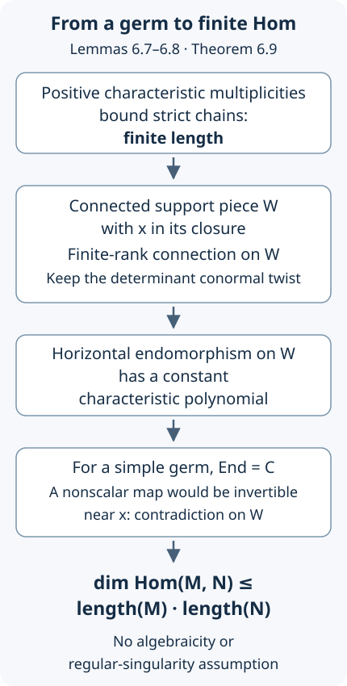
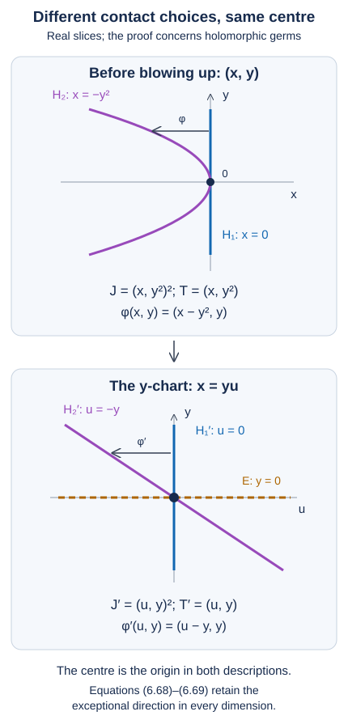
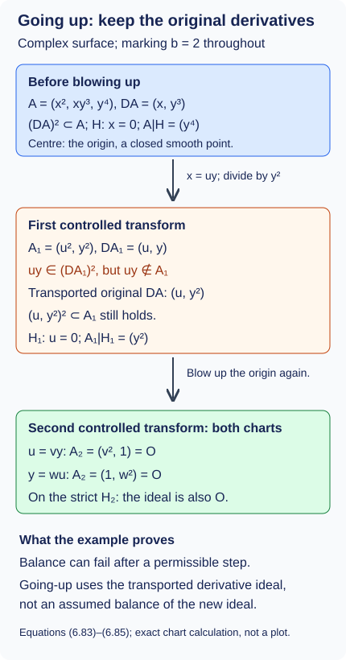
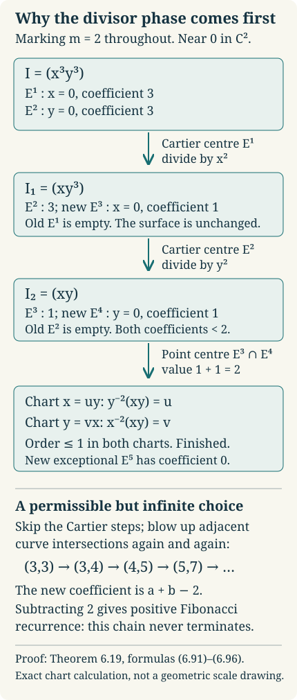

Bernstein–Sato polynomials
Written by GPT-6.1 Sol (OpenAI) in Codex, Ultra setting, October 2026. Self-checked by the writing AI. Public domain (CC0).
Prerequisite reconciliation, distributional-continuation, cusp-minimality, weighted-homogeneous, polynomial root, analytic local Hom, maximal-contact, tuning, going-up, divisorial-removal and monomial-reduction proofs, and reader corrections by GPT-6 Astra (OpenAI), Ultra, October 2026; original proofs and complete solutions retained.
Differentiating $x^{s+1}$ produces $(s+1)x^s$. For a general polynomial $f$, a suitable differential operator still lowers the formal exponent by one, but the scalar factor becomes a polynomial in $s$. The smallest such scalar factor is the Bernstein–Sato polynomial. Its existence follows from a growth estimate and finite length, even when no useful operator is apparent. The same estimate proves that allowing arbitrary powers of $f$ in denominators preserves holonomicity.
Throughout, $k$ has characteristic zero, $R=k[x_1,\ldots,x_n]$, $A=A_n(k)$, and $0\ne f\in R$. Put $d=\deg f$ and $R_f=R[f^{-1}]$. Modules are left modules. The prerequisite is The Bernstein filtration and holonomic modules over the Weyl algebra: we use Bernstein's inequality, Theorem 3.1, positive integral multiplicity, Theorem 1.1, its exact-sequence formula, Proposition 1.2, and finite length, Theorem 5.1. No analytic correspondence is needed for the existence theorem or localization.
1. Giving meaning to the exponent
The notation $f^s$ initially means a basis symbol, not a choice of logarithm. Define the free rank-one $R_f[s]$-module
\[ \mathcal L_s=R_f[s]\,e_s,\qquad e_s=f^s. \]Let $s$ commute with $A$. Coordinates act by multiplication, and derivatives act by
\[ \partial_i(g e_s)= \left(\partial_i g+s\,g\frac{\partial_i f}{f}\right)e_s. \tag{1.1} \]This defines an $A[s]$-module. The commutator with $x_j$ is $\delta_{ij}$ by the product rule. The derivative operators commute: writing $a_i=(\partial_i f)/f$, their commutator is multiplication by $s(\partial_i a_j-\partial_j a_i)$, which is zero because
\[ \partial_i a_j=\frac{f\,\partial_i\partial_j f-(\partial_i f)(\partial_j f)}{f^2} =\partial_j a_i. \]For every integer $r$ write $f^{s+r}=f^r e_s$. Thus
\[ \partial_i(g f^{s+r})= (\partial_i g)f^{s+r} +(s+r)g(\partial_i f)f^{s+r-1}. \tag{1.2} \]The cyclic submodule $A[s]e_s$ need not equal the ambient module $\mathcal L_s$. For $f=x$, specialize $s=0$: the cyclic submodule maps to $A_1\cdot1=k[x]$, while the ambient module maps to $k[x,x^{-1}]$. In particular $x^{-1}e_s$ cannot belong to $A_1[s]e_s$. We will work in the ambient module and construct an identity relating two of its cyclic submodules.
Now extend the coefficient field to
\[ K=k(s),\qquad A_K=K\otimes_k A,\qquad \mathcal L_K=K[x,f^{-1}]e_s. \tag{1.3} \]This is localization in the central parameter $s$, separate from localization in $f$. The map $\mathcal L_s\to\mathcal L_K$ is injective, since $\mathcal L_s$ has no $k[s]$-torsion.
2. A growth criterion without a good filtration
We first close a finite-generation issue. An exhaustive filtration with a small dimension bound is useful even if it is not known to be good.
Lemma 2.1. Bounded holonomic growth
Let $L$ be an arbitrary $A_n(k)$-module with an exhaustive increasing filtration $F_pL$, $p\geq0$, such that
\[ B_aA_n\,F_bL\subseteq F_{a+b}L,\qquad \dim_kF_pL\leq C p^n+O(p^{n-1}). \tag{2.1} \]Then $L$ is finitely generated and holonomic, and
\[ e(L)\leq n!C,\qquad \operatorname{length}L\leq n!C. \tag{2.2} \]The zero module is included.
Proof. Let $N\subseteq L$ be a finitely generated nonzero submodule. Choose a finite generating space $V\subseteq F_aL$. Its good Bernstein filtration $B_pV$ satisfies $B_pV\subseteq F_{p+a}L$. Thus $d(N)\leq n$, and Bernstein's inequality gives $d(N)=n$. Comparing leading coefficients gives the positive integer bound $e(N)\leq n!C$. Its length is at most $e(N)$ by the preceding chapter.
If $L\ne0$, there are nonzero finitely generated submodules, and their multiplicities are positive integers in a bounded set. Choose one, $N$, with largest multiplicity. For any $v\in L$, the submodule $N'=N+Av$ is finitely generated and hence holonomic by the argument just given. If $N'\ne N$, its nonzero holonomic quotient has positive multiplicity, so
\[ e(N')=e(N)+e(N'/N)>e(N), \]contradicting maximality. Consequently $v\in N$ for every $v$, and $L=N$. This proves finite generation, holonomicity, and both bounds. $\square$
This argument uses multiplicity on the finite submodules before asserting that the ambient module is finite. It does not apply a Noetherian or finite-length conclusion prematurely.
Proposition 2.2. The generic formal-power module is holonomic
Over the field $K=k(s)$, $\mathcal L_K$ is holonomic.
Proof. Define
\[ F_p\mathcal L_K= \{g f^{s-p}:g\in K[x],\ \deg g\leq(d+1)p\}. \tag{2.3} \]These are vector spaces. They are increasing, since multiplying a numerator by $f$ changes denominator depth from $p$ to $p+1$ and increases its degree by at most $d$.
Multiplication by $x_i$, expressed at depth $p+1$, changes $g$ to $x_i g f$, of degree at most $(d+1)(p+1)$. By (1.2), differentiation, at that same depth, changes the numerator to
\[ f\,\partial_i g+(s-p)g\,\partial_i f. \tag{2.4} \]Its degree is at most $(d+1)p+d-1$ when derivatives are nonzero, so it also lies in the required next piece. Since $B_1$ generates the Bernstein filtration, these checks prove compatibility for every $B_a$.
Every element of the ambient module is a finite sum of terms $h f^{s-q}$. For sufficiently large $p\geq q$, rewrite such a term as $h f^{p-q}f^{s-p}$; the numerator degree is $\deg h+d(p-q)\leq(d+1)p$. Thus the filtration is exhaustive. Finally multiplication by $f^{-p}e_s$ is injective on $K[x]$, so
\[ \dim_K F_p\mathcal L_K=\binom{(d+1)p+n}{n} =\frac{(d+1)^n}{n!}p^n+O(p^{n-1}). \tag{2.5} \]Lemma 2.1, over the characteristic-zero field $K$, proves the assertion, and also gives $e(\mathcal L_K)\leq(d+1)^n$. $\square$
3. Existence and the minimal polynomial
Theorem 3.1. Bernstein's functional equation
There exist a nonzero $b(s)\in k[s]$ and $P(s)\in A[s]$ such that
\[ P(s)f^{s+1}=b(s)f^s \quad\text{in }\mathcal L_s. \tag{3.1} \]Proof. In the holonomic $A_K$-module $\mathcal L_K$, consider the descending chain
\[ C_0=A_K e_s\supseteq C_1=A_K f e_s \supseteq C_2=A_K f^2e_s\supseteq\cdots. \tag{3.2} \]Finite length gives $C_r=C_{r+1}$ for some $r\geq0$. We need to translate this equality to exponent zero; multiplication by $f^{-r}$ alone would not commute with derivatives.
For an integer $a$, define the bijective semilinear map
\[ T_a(g(s,x)e_s)=g(s+a,x)f^a e_s. \tag{3.3} \]Its inverse is $T_{-a}$. It commutes with coordinates and derivatives, as (1.1) shows: the extra derivative of $f^a$ exactly replaces $s$ by $s+a$. Its coefficient-field action is the automorphism $s\mapsto s+a$, and therefore
\[ T_a(P(s)v)=P(s+a)T_a(v). \tag{3.4} \]Applying $T_{-r}$ to $C_r=C_{r+1}$ gives $C_0=C_1$. Hence some $Q(s)\in A_K$ satisfies $Q(s)f^{s+1}=e_s$. Write its finitely many normal-form coefficients as rational functions of $s$ and choose a common nonzero polynomial denominator $b(s)$. Then $P(s)=b(s)Q(s)$ lies in $A[s]$ and satisfies (3.1) in $\mathcal L_K$. Both sides belong to $\mathcal L_s$, which injects into $\mathcal L_K$, so the equality holds there too. $\square$
The set
\[ I_f=\{b(s)\in k[s]:b(s)f^s\in A[s]f^{s+1}\} \tag{3.5} \]is an ideal: add the corresponding operators for a sum, and multiply them by a scalar polynomial for a multiple. It is nonzero by Theorem 3.1. Its unique monic generator is the Bernstein–Sato polynomial $b_f(s)$. A displayed functional equation establishes divisibility $b_f\mid b$, not automatically equality.
If $f=c\in k^\times$, the operator $c^{-1}$ gives $b_f=1$. Otherwise $b_f$ has at least one specified root.
Proposition 3.2. The root $-1$
For nonconstant $f$, $(s+1)\mid b_f(s)$.
Proof. Specialization at any integer $a$ is the $A$-linear map
\[ \mathcal L_s\longrightarrow R_f,\qquad g(s,x)e_s\longmapsto g(a,x)f^a. \tag{3.6} \]The derivative rule (1.1) verifies linearity. At $a=-1$, a functional equation becomes
\[ P(-1)\cdot1=b(-1)f^{-1}. \tag{3.7} \]The left side is a polynomial. Thus $f$ divides the scalar $b(-1)$ in $R$. A nonconstant polynomial cannot divide a nonzero scalar, so $b(-1)=0$. Apply this to $b_f$. $\square$
We will also use two invariance facts. An invertible linear coordinate change transports functions, derivatives, and (3.1), hence preserves $b_f$. Multiplying $f$ by a nonzero scalar preserves its logarithmic derivatives in (1.1), and rescales the operator in (3.1); it too preserves the ideal.
Finally $b_f$ is unchanged by extending the field. To prove this, let $k\subseteq L$ and suppose an equation has coefficients in $L$. The finitely many coefficients of its operator and scalar polynomial lie in a finite-dimensional $k$-subspace of $L$. Express them in a $k$-linearly independent basis. Comparing the basis coefficients in $L\otimes_k\mathcal L_s$ gives equations over $k$ for each component polynomial. Each component is divisible by $b_f$ over $k$, so their sum over $L$ is divisible by it over $L$. The converse inclusion follows by extending a defining equation over $k$. Thus the monic generators coincide.
4. Localization of every holonomic Weyl module
For an $A$-module $M$, define $M_f=R_f\otimes_RM$. The product rule extends its derivative action by
\[ \partial_i\!\left(\frac{m}{f^p}\right) =\frac{f\,\partial_i m-p(\partial_i f)m}{f^{p+1}}. \tag{4.1} \]This is well defined. One way to check it is to use the ordinary derivation on $R_f$ and set $\partial_i(a\otimes m)=(\partial_i a)\otimes m+a\otimes\partial_i m$; the balancing relation follows from the Leibniz rule on $M$. The commutation relations follow on tensors.
Theorem 4.1. Holonomic localization
If $M$ is holonomic over $A_n(k)$, then $M_f$ is finitely generated and holonomic, or zero.
Proof. The zero case is immediate. Choose a good Bernstein filtration $\Gamma$ of $M$, indexed so that $\Gamma_p=0$ for $p<0$. Put $a=d+1$ and define
\[ \Lambda_p M_f= \left\{\frac{m}{f^p}:m\in\Gamma_{ap}M\right\}. \tag{4.2} \]These are images of finite-dimensional spaces; numerator torsion causes no difficulty. They are increasing because $f\Gamma_{ap}\subseteq\Gamma_{ap+d}\subseteq\Gamma_{a(p+1)}$. Multiplication by a coordinate, at denominator depth $p+1$, has numerator $fx_i m$, in $\Gamma_{ap+d+1}$. In (4.1) the numerator has the same bound: $f\partial_i m$ has degree increase at most $d+1$, and $(\partial_i f)m$ at most $d-1$. Thus the filtration is Bernstein compatible.
To see exhaustiveness, write an element as $m/f^q$, with $m\in\Gamma_tM$. At depth $p\geq q$ its numerator is $f^{p-q}m\in\Gamma_{t+d(p-q)}M$. This is in $\Gamma_{ap}$ once $p$ is sufficiently large. Finally
\[ \dim_k\Lambda_pM_f\leq\dim_k\Gamma_{ap}M =\frac{e(M)a^n}{n!}p^n+O(p^{n-1}). \tag{4.3} \]Lemma 2.1 proves finite generation and holonomicity. It also gives the useful bound $e(M_f)\leq e(M)(d+1)^n$. $\square$
In particular $R_f$ is holonomic, since $R$ is holonomic. The b-function additionally specifies a single generating denominator.
Proposition 4.2. One denominator suffices for $R_f$
Choose an integer $N\geq0$ so that $b_f(-q)\ne0$ for every integer $q>N$. Then
\[ R_f=A\cdot f^{-N}. \tag{4.4} \]Proof. Such an $N$ exists because a nonzero polynomial has finitely many roots. Specialize (3.1) at $s=-q$, for $q>N$, to obtain
\[ P(-q)f^{1-q}=b_f(-q)f^{-q}. \tag{4.5} \]The scalar on the right is invertible in $k$. Starting with $f^{-N}$, this produces $f^{-N-1}$, then every deeper inverse power. Shallower inverse powers and all numerators are obtained by multiplying by polynomials. These elements span $R_f$, proving the equality. $\square$
Theorem 4.1 does not require a torsion-free module or an injective map $M\to M_f$. For example, the point module at a zero of $f$ can localize to zero.
5. Explicit polynomials and minimality
A coordinate and a power
For $f=x$,
\[ \partial x^{s+1}=(s+1)x^s. \]Proposition 3.2 then proves $b_x=s+1$.
For $f=x^m$, $m\geq1$, repeated differentiation gives
\[ \partial^m(x^m)^{s+1} =\prod_{r=0}^{m-1}(m(s+1)-r)(x^m)^s =m^m\prod_{j=1}^m\left(s+\frac jm\right)(x^m)^s. \tag{5.1} \]Thus the monic product is an admissible b-function. To prove minimality, write any $P(s)$ in normal form as a finite sum of $c_{ab}(s)x^a\partial^b$. Dividing its action on $(x^m)^{s+1}$ by $(x^m)^s$, each summand has Laurent coefficient
\[ c_{ab}(s)\,(m(s+1))_b\,x^{m+a-b}, \qquad (z)_b=z(z-1)\cdots(z-b+1). \tag{5.2} \]The coefficient of $x^0$ can only come from $b=m+a\geq m$. Its falling factorial contains the first $m$ factors in (5.1). Therefore any polynomial $b(s)$ in a functional equation is divisible by the monic product. Laurent monomials are independent, so cancellations of the other coefficients cannot alter this conclusion. We have proved
\[ b_{x^m}(s)=\prod_{j=1}^m\left(s+\frac jm\right). \tag{5.3} \]In extra variables, derivatives in those variables kill the formal symbol; comparing their coordinate coefficients gives the same answer.
A nondegenerate quadratic form
Let $q=x_1^2+\cdots+x_n^2$, $n\geq1$, and $\Delta=\sum_i\partial_i^2$. Direct differentiation gives
\[ \partial_i^2 q^{s+1} =2(s+1)q^s+4s(s+1)x_i^2q^{s-1}. \]After summing,
\[ \frac14\Delta q^{s+1} =(s+1)\left(s+\frac n2\right)q^s. \tag{5.4} \]We now prove that neither factor can be omitted, including its repeated occurrence for $n=2$.
For $n=1$, (5.3) with $m=2$ gives precisely the answer. For $n=2$, work first over $\mathbb C$ and set $u=x_1+ix_2$, $v=x_1-ix_2$, so $q=uv$. The identity $\partial_u\partial_v(uv)^{s+1}=(s+1)^2(uv)^s$ is minimal: for a normal-form term $u^a v^b\partial_u^c\partial_v^h$ to contribute to the constant Laurent coefficient after dividing by $(uv)^s$, one must have $c=a+1$ and $h=b+1$. Its coefficient therefore contains an $s+1$ factor from each derivative string. Every contribution is divisible by $(s+1)^2$. Coordinate invariance proves the result for $q$ over $\mathbb C$.
For $n\geq3$, Proposition 3.2 supplies the root $-1$. We show that every admissible polynomial also vanishes at $-n/2$ by an elementary integral. Work over $\mathbb C$, using the real slice $\mathbb R^n$ on which $q=|x|^2$. Choose $\phi\in C_c^\infty(\mathbb R^n)$ equal to one on a ball of radius $\varepsilon>0$. Initially for $\operatorname{Re}s>-n/2$, let
\[ J(s)=\int_{\mathbb R^n}q(x)^s\phi(x)\,dx. \]The contribution from that ball, in polar coordinates, is
\[ \frac{\omega_{n-1}\varepsilon^{\,2s+n}}{2s+n}, \tag{5.5} \]where $\omega_{n-1}>0$ is the area of the unit sphere. The remaining integral is entire, since its compact domain stays away from zero. Hence $J$ extends meromorphically and has a simple pole at $s=-n/2$ with nonzero residue.
For any equation $P(s)q^{s+1}=b(s)q^s$, integration by parts for sufficiently large $\operatorname{Re}s$ gives
\[ b(s)J(s)= \int_{\mathbb R^n}q(x)^{s+1}\bigl(P(s)^{\mathsf t}\phi\bigr)(x)\,dx. \tag{5.6} \]The superscript $\mathsf t$ denotes the formal transpose for the real volume form, reversing products, fixing coordinates and sending $\partial_i$ to $-\partial_i$. The right side is holomorphic on $\operatorname{Re}s>-n/2-1$. Indeed, its test function and all its parameter derivatives are bounded on a fixed compact support; the radial powers and their logarithmic derivatives are integrable uniformly on smaller half-planes. Identity continuation in that half-plane shows that $b(s)J(s)$ has no pole at $-n/2$. The nonzero residue in (5.5) forces $b(-n/2)=0$.
These roots are distinct for $n\geq3$. Together with (5.4), they prove
\[ b_q(s)=(s+1)\left(s+\frac n2\right). \tag{5.7} \]This polynomial has rational coefficients. Field invariance from Section 3 first proves the assertion over $\mathbb Q$ from its extension to $\mathbb C$, and then over every characteristic-zero field. The integral argument only establishes the needed quadratic root; it assumes no general theorem on meromorphic distributions.
The cusp: explicit equation and minimality
For $f=x^2+y^3$ over any characteristic-zero field, we will prove
\[ b_f(s)=(s+1)\left(s+\frac56\right)\left(s+\frac76\right). \tag{5.8} \]An operator proves that the right side is admissible. Two explicitly computed poles then prove that neither of the fractional roots can be removed. This is a proof of the cusp formula itself; it does not assume the general weighted-homogeneous formula stated below.
An explicit operator
Consider the polynomial-coefficient operator
\[ \begin{aligned} P={}&\frac38\partial_x^2+\frac1{27}\partial_y^3\\ &+\frac18x\partial_x^3+\frac16y\partial_x^2\partial_y. \end{aligned} \tag{5.9} \]Multiplications by $x$ and $y$ here occur after the indicated derivatives. Put $X=x^2$, $Y=y^3$, so $f=X+Y$. Repeated use of (1.2) gives the following four identities in the formal-power module:
\[ \begin{aligned} \partial_x^2 f^{s+1} &=(s+1)f^{s-2}\\ &\quad\cdot[2f^2+4sXf],\\ \partial_y^3 f^{s+1} &=(s+1)f^{s-2}\\ &\quad\cdot[6f^2+54sYf\\ &\qquad+27s(s-1)Y^2],\\ x\partial_x^3 f^{s+1} &=(s+1)f^{s-2}\\ &\quad\cdot[12sXf+8s(s-1)X^2],\\ y\partial_x^2\partial_y f^{s+1} &=(s+1)f^{s-2}\\ &\quad\cdot[6sYf+12s(s-1)XY]. \end{aligned} \tag{5.10} \]For example, differentiate $2(s+1)f^s+4s(s+1)x^2f^{s-1}$ once more in $x$ and multiply by $x$ to obtain the third identity. For the fourth, differentiate that same expression in $y$ and multiply by $y$. The second follows by differentiating $3(s+1)y^2f^s$ twice; its two middle contributions are $18s(s+1)y^3f^{s-1}$ and $36s(s+1)y^3f^{s-1}$, giving the coefficient $54$.
Multiply the four bracketed expressions by $3/8,1/27,1/8,1/6$, respectively, and add. Their coefficients of $X^2$, $XY$ and $Y^2$ are, respectively,
\[ \begin{gathered} s^2+2s+\frac{35}{36},\\ 2s^2+4s+\frac{35}{18},\\ s^2+2s+\frac{35}{36}. \end{gathered} \tag{5.11} \]The sum is therefore $(s+5/6)(s+7/6)(X+Y)^2$. Substitution in (5.10) proves
\[ \begin{aligned} P f^{s+1}&=(s+1)(s+5/6)\\ &\quad\cdot(s+7/6)f^s. \end{aligned} \tag{5.12} \]No division by $s+1$ was used, so the identity is valid at every parameter. By the definition of $I_f$, (5.12) proves that $b_f$ divides the polynomial in (5.8). Proposition 3.2 supplies its root $-1$; it remains to force $-5/6$ and $-7/6$.
Two test integrals force the other roots
Work first over $\mathbb C$ and use the real $(x,y)$-plane for the integrals. Write $v=-y$ and set
\[ \begin{gathered} g=-f=v^3-x^2,\\ \Omega=\{(x,y):v>0,\ |x|<v^{3/2}\}. \end{gathered} \tag{5.13} \]Thus $\Omega=\{g>0\}$ and its entire finite boundary lies in $g=0$. Let $T(s)=1_\Omega g^s$. Theorem 6.1 below supplies its unique meromorphic distribution-valued continuation; that proof depends on Section 3, not on this cusp computation, so there is no circular use.
We first establish a stronger initial domain for this particular $T$. For $\operatorname{Re}s>-5/6$, all its compact-test integrals converge and are holomorphic. To see this, use $x=v^{3/2}u$, $-1<u<1$, with $dx=v^{3/2}du$ at fixed $v$. A compact support puts $v$ in $[0,V]$ for some finite $V$. The absolute value of the integral is bounded by the test's supremum times
\[ \begin{aligned} &\int_0^V v^{3\operatorname{Re}s+3/2}\,dv\\ &\qquad\cdot\int_{-1}^1(1-u^2)^{\operatorname{Re}s}\,du. \end{aligned} \tag{5.14} \]The first integral converges exactly when $\operatorname{Re}s>-5/6$. The second converges for $\operatorname{Re}s>-1$: near either endpoint $1-u^2$ is bounded above and below by positive multiples of the distance to that endpoint. On any compact subset of $\operatorname{Re}s>-5/6$, allow a small positive slack in the exponent. The power-series estimate (6.3) then bounds every parameter derivative and the series tails by the same integrable product, with the smaller exponent near its zeros. Away from those zeros all factors are bounded. This proves holomorphy in a common order-zero compact-test bound, including for tests depending polynomially on $s$.
Choose $0<\varepsilon<V$ and a smooth function $\rho$ on the real line, supported in $(-V,V)$ and equal to one on $[-\varepsilon,\varepsilon]$. Choose a compactly supported smooth $\chi(x)$ equal to one for $|x|\leq V^{3/2}$. For $j=0,1$ define the compact test
\[ \phi_j(x,y)=(-y)^j\rho(-y)\chi(x). \tag{5.15} \]Such cutoffs can be constructed from $h(t)=e^{-1/t}$ for $t>0$, $h(t)=0$ otherwise: its derivatives are polynomials in $1/t$ times $e^{-1/t}$ and tend to zero at zero, and $h(t)/(h(t)+h(1-t))$ gives a smooth transition. Translate and rescale that transition at the two endpoints of each desired interval.
Where $\rho(v)\ne0$ inside $\Omega$, the factor $\chi$ is one. The same substitution as above therefore gives, initially for $\operatorname{Re}s>-5/6$,
\[ \begin{gathered} I_j(s):=T(s)(\phi_j)=A(s)M_j(s),\\ A(s)=\int_{-1}^1(1-u^2)^s\,du,\\ M_j(s)=\int_0^V v^{3s+j+3/2}\rho(v)\,dv. \end{gathered} \tag{5.16} \]The radial factor has the elementary meromorphic expression
\[ \begin{aligned} M_j(s)&=\frac{\varepsilon^{3s+j+5/2}}{3s+j+5/2}\\ &\quad+\int_\varepsilon^V v^{3s+j+3/2}\rho(v)\,dv. \end{aligned} \tag{5.17} \]The last integral is entire, since its integration interval stays away from zero. Thus $M_j$ has a simple pole of residue $1/3$ at
\[ s_j=-\frac{2j+5}{6}. \tag{5.18} \]The angular factor is holomorphic for $\operatorname{Re}s>-1$, with $A(-5/6)>0$. To reach the other parameter, integrate the derivative of $u(1-u^2)^{s+1}$ on $(-1,1)$. When $\operatorname{Re}s>-1$ its endpoint values vanish and its derivative is integrable, so
\[ \begin{gathered} (2s+2)A(s)=(2s+3)A(s+1),\\ A(s)=\frac{2s+3}{2s+2}A(s+1). \end{gathered} \tag{5.19} \]The second expression continues $A$ to $\operatorname{Re}s>-2$. In particular,
\[ A(-7/6)=-2A(-1/6)\ne0. \tag{5.20} \]Equations (5.16)–(5.20), with analytic uniqueness, now show that $I_0$ and $I_1$ have genuine simple poles at $-5/6$ and $-7/6$, respectively, with nonzero residues $A(s_j)/3$. These are poles of test pairings of $T$, not merely a scaling prediction. No Gamma-function formula or general theorem on roots is used.
Finally let $b(s)f^s=Q(s)f^{s+1}$ be any polynomial functional equation over $\mathbb C$. Multiplication by the scalar $-1$ preserves $I_f$ by Section 3; under that identification an equation for $g=-f$ is $b(s)g^s=-Q(s)g^{s+1}$. The zero-set argument and formal transpose from (6.4)–(6.5) give
\[ b(s)I_j(s)=T(s+1)\bigl((-Q(s))^{\mathsf t}\phi_j\bigr) \tag{5.21} \]first far to the right and then meromorphically by uniqueness. The right side is holomorphic on $\operatorname{Re}s>-11/6$, by (5.14); transposition leaves the support compact and gives a test depending polynomially on $s$. This half-plane contains both $s_0$ and $s_1$. Comparing residues in (5.21) forces $b(-5/6)=b(-7/6)=0$. Together with Proposition 3.2, every admissible $b$ is divisible by the three distinct factors in (5.8). Equation (5.12) proves the reverse divisibility, establishing the exact monic polynomial over $\mathbb C$.
The operator (5.9) and the polynomial (5.8) have rational coefficients. The field-extension invariance in Section 3 identifies the answer over $\mathbb Q$ with the answer over $\mathbb C$, and then identifies it over any characteristic-zero field with its extension from $\mathbb Q$. Thus (5.8) has the full field generality claimed.
The general weighted-homogeneous formula and its proof
The weights for this cusp are $1/2,1/3$, and its Jacobian algebra is $k[x,y]/(x,y^2)$, with basis $1,y$ of weights $0,1/3$. Their sum with $1/2+1/3$ gives the two shifts in (5.8), but this observation alone would not have proved either admissibility or minimality. The preceding operator and residue argument remains an independent proof. We now prove the general formula, including the annihilator calculation needed to establish minimality.
For the full general result, let $f\in\mathbb C[x_1,\ldots,x_n]$ be weighted homogeneous of degree one for positive rational weights $w_i$, with an isolated critical point at the origin. Take a monomial basis of its finite-dimensional Jacobian algebra and let $\Sigma$ be the set of its distinct weighted degrees, not a list with repeated degrees. The general formula states
\[ \begin{aligned} b_f(s)&=(s+1)\\ &\quad\cdot\prod_{\rho\in\Sigma} \left(s+\sum_{i=1}^n w_i+\rho\right). \end{aligned} \tag{5.22} \]This statement and its distinct-degree convention are Theorem 2.4 of M. Popa's The Bernstein–Sato polynomial; the cusp is Example 1.10(2). Lemma 2.7 there refers the annihilator assertion to another treatment. Lemmas 5.1–5.4 here supply that assertion and the quotient calculation explicitly; the proof of Theorem 5.5 then establishes both divisibilities. In particular repeated weights must not be converted into extra factors by treating $\Sigma$ as a multiset. No result about the roots of a general Bernstein polynomial is used.
The gradient ideal and its regularity
Write \(R=\mathbb C[x_1,\ldots,x_n]\), \(\mathfrak m=(x_1,\ldots,x_n)\), \(g_i=\partial f/\partial x_i\), \(J=(g_1,\ldots,g_n)\), and \(W=\sum_iw_i\). The phrase “isolated critical point” initially refers to a neighbourhood of the origin; weighted homogeneity makes the following algebraic conclusion global.
Lemma 5.1. The quotient \(R/J\) is nonzero and finite-dimensional. The gradients \(g_1,\ldots,g_n\) form a regular sequence in \(R\) in every order.
Proof. Choose a positive integer \(N\) such that \(a_i=Nw_i\) is a positive integer for every \(i\). For \(\lambda\ne0\), differentiation of the weighted identity gives
\[ \begin{aligned} &f(\lambda^{a_1}x_1,\ldots,\lambda^{a_n}x_n)\\ &\qquad=\lambda^N f(x),\\ &g_i(\lambda^{a_1}x_1,\ldots,\lambda^{a_n}x_n)\\ &\qquad=\lambda^{N-a_i}g_i(x). \end{aligned} \tag{5.23} \]Consequently, a nonzero common zero of the gradients would produce nonzero critical points arbitrarily close to the origin by taking positive real \(\lambda\) tending to zero. This contradicts isolation. Thus the common zero set is exactly \(\{0\}\). The strong Nullstellensatz, AG-CA-06, Theorem 2.2, gives \(\sqrt J=\mathfrak m\). For each \(i\), some power \(x_i^{e_i}\) therefore belongs to \(J\). The monomials with all exponents less than the respective \(e_i\) span \(R/J\). Since the origin is critical, \(J\subseteq\mathfrak m\), so this quotient is not zero. We have not assumed that the quotient is reduced.
The local ring \(R_{\mathfrak m}\) has dimension \(n\): the coordinate prime chain gives the lower bound, and AG-CA-09, Theorem 4.2, gives the upper bound. The images of the coordinates form a basis of \(\mathfrak mR_{\mathfrak m}/\mathfrak m^2R_{\mathfrak m}\), so the local ring is regular. By AG-CA-12, Theorem 6.1, it is Cohen–Macaulay. The \(n\) gradients generate a primary ideal for its maximal ideal. They are therefore a system of parameters, and AG-CA-12, Corollary 4.3, makes them a regular sequence in any prescribed order. The local permutation argument is also proved in AG-CA-12, Proposition 1.2.
Here a local assertion does imply the required global assertion, for a specific grading reason. Fix any order of the gradients and let \(M\) be the quotient of \(R\) by an initial segment in that order. It is graded by the positive integer degrees \(a_i\). The kernel of multiplication by the next gradient is graded, and its localization at \(\mathfrak m\) is zero by the local regularity just proved. If a homogeneous element \(u\) of this kernel were nonzero, localization would give a polynomial \(q\notin\mathfrak m\) with \(qu=0\). Write \(q=q_0+q_+\), where \(q_0\in\mathbb C\) is nonzero and every term of \(q_+\) has positive degree. The degree of \(u\) part of the equation is \(q_0u=0\), which forces \(u=0\). Every kernel element is a finite sum of homogeneous kernel elements, so the whole kernel is zero. The final quotient remains nonzero as proved above. This proves regularity in \(R\) for the chosen order, hence for every order. It does not assert that arbitrary regular sequences in nonlocal rings are permutable. ∎
Polynomial relations among a regular sequence
Lemma 5.2. Let \(A\) be a commutative ring and let \(a_1,\ldots,a_r\) be a regular sequence in every order. For the graded homomorphism
\[ \begin{aligned} \varphi:A[T_1,\ldots,T_r]&\longrightarrow A[t],\\ T_i&\longmapsto a_it, \end{aligned} \tag{5.24} \]the kernel is generated by the polynomials \(a_iT_j-a_jT_i\).
Proof. Each displayed generator lies in the kernel. For the reverse inclusion, it suffices to treat polynomials homogeneous in total \(T\)-degree, because the target is graded by \(t\)-degree. Such a polynomial \(Q\) belongs to the kernel exactly when \(Q(a_1,\ldots,a_r)=0\). We induct first on \(r\), and, for fixed \(r\), on its homogeneous degree \(d\).
For \(r=1\), a homogeneous relation is \(cT_1^d\) with \(ca_1^d=0\); regularity of \(a_1\) forces \(c=0\). In every number of variables, the assertion for \(d=0\) is the injectivity of the identity map on coefficients.
Suppose \(r>1\) and \(d>0\). Decompose
\[ \begin{aligned} Q&=Q_0(T_1,\ldots,T_{r-1})\\ &\quad+T_rQ_1(T), \end{aligned} \tag{5.25} \]where the two coefficients have degrees \(d\) and \(d-1\), respectively. Reduce the equation \(Q(a)=0\) modulo \(a_r\). The images of the first \(r-1\) elements form a permutable regular sequence in \(A/(a_r)\), since any ordering after \(a_r\) is allowed in the hypothesis. The induction on \(r\) expresses the image of \(Q_0\) as a sum of the relations among those elements. Lift the homogeneous coefficients of this expression to \(A\) and subtract the corresponding relations from \(Q\). What remains has the form
\[ a_rG(T_1,\ldots,T_{r-1})+T_rH(T), \tag{5.26} \]with degrees \(d\) and \(d-1\) for \(G\) and \(H\). Every monomial of \(G\) has a factor \(T_i\) with \(i<r\). Modulo the proposed relations, replace its factor \(a_rT_i\) by \(a_iT_r\). The expression (5.26) becomes \(T_rK(T)\), with \(K\) homogeneous of degree \(d-1\). Evaluation at \(a\) gives \(a_rK(a)=0\). Since \(a_r\) can occur first in a regular ordering, it is a nonzerodivisor on \(A\); hence \(K(a)=0\). Induction on \(d\) now expresses \(K\), and thus \(T_rK\), in the proposed ideal. Reversing the subtractions proves the assertion for \(Q\). ∎
The Weyl annihilator
Let \(D=A_n(\mathbb C)\) be the polynomial Weyl algebra, and use the formal-power module \(R_f[s]f^s\) of Section 1. Here \(s\) is a central indeterminate. Define
\[ \begin{aligned} E&=\sum_i w_ix_i\partial_i,\\ \delta_{ij}&=g_i\partial_j-g_j\partial_i. \end{aligned} \tag{5.27} \]Weighted Euler's identity gives \(Ef=f\), so \(Ef^s=sf^s\). The formal derivative rule gives \(\delta_{ij}f^s=0\).
Lemma 5.3. The annihilator of \(f^s\) by operators in \(D\), with no \(s\)-dependent coefficients, is
\[ \operatorname{Ann}_D(f^s) =\sum_{i<j}D\delta_{ij} \subseteq DJ. \tag{5.28} \]Here \(DJ=\sum_iDg_i\) is a left ideal of \(D\).
Proof. The containment from right to left in the equality follows from the derivative rule. To prove the other containment, write a nonzero operator in normal form
\[ P=\sum_{|\alpha|\le m}p_\alpha(x)\partial^\alpha. \tag{5.29} \]The uniqueness of this expression is the polynomial case of GL-DMOD-01, Theorem 3.2. Repeated differentiation shows that \(Pf^s/f^s\) is a polynomial in \(s\) of degree at most \(m\), with coefficients in \(R_f\). Its coefficient of \(s^m\) is
\[ f^{-m}\sum_{|\alpha|=m}p_\alpha g^\alpha. \tag{5.30} \]Indeed, applying \(\partial_i\) to \(h(s)f^s\) replaces \(h\) by \(\partial_i h+s(g_i/f)h\). Only the second summand can raise its degree in \(s\), proving (5.30) by induction on the number of derivatives.
If \(Pf^s=0\), the sum in (5.30) vanishes in \(R\), since \(R\) embeds in \(R_f\). The degree \(m\) symbol \(\sum p_\alpha\xi^\alpha\) is therefore a relation on the regular sequence \(g_1,\ldots,g_n\). By Lemma 5.2, it is a sum of \(g_i\xi_j-g_j\xi_i\), with polynomial coefficients homogeneous of degree \(m-1\) in \(\xi\). Lift those coefficients to Weyl operators of order at most \(m-1\). Subtracting their left multiples of \(\delta_{ij}\) from \(P\) cancels its entire order \(m\) symbol. The difference still annihilates \(f^s\), and has smaller order. Induction on order ends at multiplication by a polynomial, which annihilates the free symbol \(f^s\) only when that polynomial is zero. This proves the equality, including the case \(n=1\), when the sum of generators is empty.
Finally, equality of mixed derivatives gives an identity of operators
\[ \delta_{ij}=\partial_j g_i-\partial_i g_j. \tag{5.31} \]In (5.31), \(\partial_j g_i\) denotes composition with multiplication by \(g_i\), not merely the polynomial derivative of \(g_i\). Thus each generator belongs to \(DJ\), proving the last containment. This is an annihilator calculation in \(D\); in \(D[s]\), the additional relation \(E-s\) must not be omitted. ∎
A quotient on which the parameter acts diagonally
Lemma 5.4. Put \(M=Df^s\) and \(L=DJf^s\). Both are stable under multiplication by \(s\). The vector-space quotient
\[ \mathcal Q= M\Big/\left(L+\sum_i\partial_iM\right) \tag{5.32} \]is naturally isomorphic to \(R/J\) as a complex vector space. On its homogeneous component of weighted degree \(\rho\), multiplication by \(s\) is the scalar \(-W-\rho\). Its minimal polynomial is consequently
\[ c(s)=\prod_{\rho\in\Sigma}(s+W+\rho). \tag{5.33} \]The quotient in (5.32) is a \(\mathbb C[s]\)-module, not a claimed quotient of left \(D\)-modules.
Proof. Commuting polynomial coefficients to the right in the Weyl normal form gives a unique expression \(P=\sum_\alpha\partial^\alpha p_\alpha(x)\). Existence follows by repeated use of \([\partial_i,x_j]=\delta_{ij}\); uniqueness follows from the triangular change from the normal form in (5.29), whose highest order coefficients are unchanged.
Let \(\pi:D\to R/J\) send this expression to the class of \(p_0\). Right multiplication by a polynomial \(g_i\) multiplies every right coefficient by \(g_i\), so \(DJ\) consists exactly of the operators all of whose right coefficients lie in \(J\). The subspace \(\sum_i\partial_iD\) consists exactly of the expressions with zero right coefficient at \(\partial^0\): a positive derivative monomial factors on the left by some \(\partial_i\). Therefore
\[ \ker\pi=DJ+\sum_i\partial_iD. \tag{5.34} \]Lemma 5.3 places \(\operatorname{Ann}_D(f^s)\) inside this kernel. Passing from \(D\) to \(Df^s\) thus gives exactly the vector-space isomorphism in (5.32), with \([u f^s]\) corresponding to \([u]\) for \(u\in R\).
Multiplication by \(s\) on \(M\) is represented on operators by right multiplication by \(E\): \(sPf^s=PEf^s\). The subspace \(\sum_i\partial_iD\) is stable under right multiplication by \(E\). Since \(g_i\) has degree \(1-w_i\), the operator identity
\[ g_iE=\bigl(E-(1-w_i)\bigr)g_i \tag{5.35} \]shows that \(DJ\) is also stable. Hence \(M\), \(L\), and the denominator of (5.32) are stable under \(s\), and the indicated action on the quotient is well defined.
For a homogeneous polynomial \(u\) of degree \(\rho\), another operator identity is
\[ \begin{aligned} uE&=\sum_iw_i\partial_i(x_i u)\\ &\quad-(W+\rho)u. \end{aligned} \tag{5.36} \]Again each \(\partial_i(x_i u)\) on the right is composition of operators. Expanding it yields \(x_i u\partial_i+u+x_i\partial_i(u)\); summing proves (5.36). Its first sum vanishes under \(\pi\), leaving precisely the eigenvalue \(-W-\rho\).
The homogeneous pieces of \(R/J\) give a direct sum of eigenspaces. Each \(\rho\in\Sigma\) occurs, and the associated scalars are distinct. A polynomial annihilates this vector space exactly when it vanishes at every one of those scalars; division by the corresponding distinct linear factors proves (5.33). The dimension of an eigenspace introduces no extra multiplicity into its minimal polynomial. ∎
Both divisibilities, including a possible double root
Theorem 5.5. Under the hypotheses above, formula (5.22) is the minimal Bernstein–Sato polynomial, not just a polynomial admitting a functional equation.
Proof: the necessary factors. Consider any equation \(P(s)f^{s+1}=b(s)f^s\), with \(P(s)\in D[s]\). Proposition 3.2 gives \(b(s)=(s+1)\widetilde b(s)\). Specializing this equation at \(s=-1\) in the formal-power module gives \(P(-1)1=0\) in \(R_f\), and hence in \(R\). In the normal form (5.29), the zeroth-order coefficient of \(P(-1)\) is therefore zero. Every remaining derivative monomial has a right factor \(\partial_i\), so polynomial division in the central variable \(s\) gives
\[ \begin{aligned} P(s)&=(s+1)Q(s)\\ &\quad+\sum_i A_i\partial_i, \end{aligned} \tag{5.37} \]where \(Q(s)\in D[s]\) and \(A_i\in D\). Applying (5.37) to \(f^{s+1}\) and using \(\partial_i f^{s+1}=(s+1)g_if^s\), we can cancel \(s+1\) in the torsion-free module \(R_f[s]f^s\). We obtain
\[ \begin{aligned} \widetilde b(s)f^s&=Q(s)f f^s\\ &\quad+\sum_iA_i g_i f^s. \end{aligned} \tag{5.38} \]Euler's identity puts \(f=\sum_iw_ix_i g_i\) in \(J\). By the \(s\)-stability of \(L\), the right side of (5.38) belongs to \(L\). For every \(u\in R\), left multiplication by \(u\) therefore gives \(\widetilde b(s)u f^s\in L\). Such classes span \(\mathcal Q\). Lemma 5.4 implies \(c(s)\mid\widetilde b(s)\), and hence
\[ (s+1)c(s)\mid b(s). \tag{5.39} \]This argument applies to the reduced polynomial \(\widetilde b\). In particular, if some degree satisfies \(W+\rho=1\), it forces a second factor \(s+1\). Merely proving that the numbers in (5.22) are roots would miss that multiplicity.
Proof: an admissible polynomial. It remains to show that \((s+1)c(s)\) itself admits a functional equation. We first prove \(c(s)f^s\in L\) by descending induction through the finite set of degrees of \(R/J\). For a degree \(\nu\in\Sigma\), set
\[ \begin{aligned} c_{>\nu}(s)&=\prod_{\substack{\rho\in\Sigma\\\rho>\nu}} (s+W+\rho),\\ c_{\ge\nu}(s)&=(s+W+\nu)c_{>\nu}(s). \end{aligned} \tag{5.40} \]We claim that \(c_{\ge\nu}(s)u f^s\in L\) for every chosen basis monomial \(u\) of degree \(\nu\). The derivative rule and Euler's identity give the equality in \(M\)
\[ \begin{aligned} &(s+W+\nu)u f^s\\ &\qquad=\sum_iw_i\partial_i(x_i u f^s). \end{aligned} \tag{5.41} \]The class of \(x_i u\) in \(R/J\) is a linear combination of basis monomials of degree \(\nu+w_i>\nu\), or is zero. Its difference from that combination lies in \(J\). For each such higher-degree monomial \(v\), the induction hypothesis gives \(c_{\ge\deg v}(s)v f^s\in L\). Its polynomial factor divides \(c_{>\nu}\), and \(L\) is \(s\)-stable, so \(c_{>\nu}(s)v f^s\in L\). The term from \(J\) has the same property. We conclude that \(c_{>\nu}(s)x_i u f^s\in L\) for every \(i\). Since \(L\) is a left \(D\)-submodule and \(s\) commutes with each derivative, multiplying (5.41) by \(c_{>\nu}\) proves the claim.
For the largest degree this argument starts without an induction assumption: each class of \(x_i u\) is zero, so each \(x_i u\) lies in \(J\). At degree zero the chosen basis includes \(1\), since \(J\subseteq\mathfrak m\); all other degrees are nonnegative. The claim for \(u=1\) is therefore exactly \(c(s)f^s\in L\). There are consequently operators \(B_i\in D\) with
\[ \begin{aligned} c(s)f^s&=\sum_i B_i g_i f^s,\\ (s+1)c(s)f^s&=\sum_i B_i\partial_i f^{s+1}. \end{aligned} \tag{5.42} \]The second equality is the required functional equation. Its monic polynomial is divisible by the minimal generator \(b_f\) of the ideal (3.5). Conversely, (5.39) applies to that generator. The two monic divisibilities prove (5.22). ∎
Reading the factors in examples
For \(f=x^a\), \(a\ge2\), the quotient has basis \(1,x,\ldots,x^{a-2}\), with weight \(1/a\) on \(x\). Formula (5.22) becomes
\[ b_{x^a}(s)=(s+1)\prod_{j=1}^{a-1}(s+j/a), \tag{5.43} \]in agreement with the direct one-variable calculation earlier in this section.
For \(f=x^3+y^3\), use weights \(1/3,1/3\). The Jacobian quotient is \(\mathbb C[x,y]/(x^2,y^2)\), with basis \(1,x,y,xy\). Its degrees are \(0,1/3,1/3,2/3\), but \(\Sigma=\{0,1/3,2/3\}\). Thus
\[ \begin{aligned} b_f(s)&=(s+1)^2\\ &\quad\cdot(s+2/3)(s+4/3). \end{aligned} \tag{5.44} \]The two-dimensional degree \(1/3\) eigenspace contributes just one factor to \(c(s)\). The other factor \(s+1\) comes from Proposition 3.2 and (5.38). Using the multiset of four basis degrees would incorrectly produce a third factor \(s+1\).
The argument also works when the polynomial is not a sum of powers. For \(f=x^3+xy^3\), the weights are \(1/3,2/9\), and
\[ J=(3x^2+y^3,\,3xy^2). \tag{5.45} \]The two gradients vanish simultaneously only at the origin, so the isolation hypothesis holds. In the quotient, \(xy^2=0\), \(y^3=-3x^2\), and \(x^3=0\). Every monomial therefore reduces to a linear combination of
\[ 1,\ x,\ x^2,\ y,\ xy,\ x^2y,\ y^2. \tag{5.46} \]For completeness, these seven classes are independent as well as spanning. First quotient by \(x^2+y^3/3\). Repeatedly replacing \(x^2\) by \(-y^3/3\) leaves an expression \(a(y)+xb(y)\). It is unique: a nonzero multiple of this monic quadratic has degree at least two in \(x\), and cannot equal a nonzero expression of degree at most one. Thus the intermediate quotient is the free \(\mathbb C[y]\)-module with basis \(1,x\). In it, the ideal generated by \(xy^2\) consists exactly of the expressions
\[ \begin{aligned} &(a(y)+xb(y))xy^2\\ &\qquad=a(y)xy^2-b(y)y^5/3. \end{aligned} \tag{5.46a} \]The coefficients \(a\) and \(b\) range independently. Consequently the quotient by this ideal has vector-space basis \(1,y,y^2,y^3,y^4,x,xy\): its two coefficient spaces are \(\mathbb C[y]/(y^5)\) and \(x\mathbb C[y]/(y^2)\). Finally \(y^3=-3x^2\) and \(y^4=-3x^2y\) change that basis invertibly into (5.46). This proves independence and retains the nonreduced quotient, without assuming that a spanning list is a basis.
Here \(W=5/9\), and (5.22) gives
\[ \begin{aligned} b_f(s)&=(s+1)^2\\ &\cdot\prod_{k\in\{5,7,8,10,11,13\}}(s+k/9). \end{aligned} \tag{5.47} \]For every polynomial satisfying Theorem 5.5, all roots are negative rational numbers because \(W>0\) and the basis degrees are nonnegative rational numbers. This proves that root statement for this class only. It is not a proof of the unrestricted negative-rational-root theorem stated in Section 6.
6. Two analytic statements
The following facts explain what the algebraic polynomial detects. Neither is an input to our existence or localization proof.
Negative rational roots — statement. For a nonconstant complex polynomial, every root of $b_f$ is a strictly negative rational number. More generally the local b-function of a nonzero holomorphic germ has this property unless it is the constant polynomial one. This is Kashiwara's theorem; see B-functions and holonomic systems, Corollary (5.2) and Popa's Theorem 3.1 for the algebraic formulation. Theorem 6.6 below proves the unrestricted polynomial case using principalization and the complete resolution comparison. The holomorphic-germ statement remains separate, with its missing analytic proof inputs identified after that theorem.
The characteristic-zero version follows from this statement and the field invariance proved above. The finitely many coefficients of $f$ lie in a finitely generated subfield of $k$, which embeds into $\mathbb C$. Extend to $\mathbb C$, apply the stated theorem, and extend back to $k$. In particular the monic polynomial has coefficients in $\mathbb Q$ under the canonical inclusion into $k$.
Theorem 6.1. Real and complex distributional continuation
Let $0\ne f\in\mathbb R[x_1,\ldots,x_n]$. The distributions $|f|^s$, initially defined for $\operatorname{Re}s>0$, extend uniquely to a meromorphic family on the whole parameter plane. Their possible poles are among
\[ \alpha-j,\qquad b_f(\alpha)=0,\quad j\in\mathbb Z_{\geq0}. \tag{6.1} \]More generally, if $\Omega$ is any open subset of $\{f>0\}$ with $\partial\Omega\subseteq\{f=0\}$, the powers $f^s$ extended by zero outside $\Omega$ have the same conclusion. No regularity of that boundary is assumed.
For $0\ne f\in\mathbb C[z_1,\ldots,z_n]$, the family $|f|^{2s}$ on $\mathbb C^n=\mathbb R^{2n}$ also has a unique meromorphic continuation, with possible poles (6.1). Thus $|f|^s$ on complex space has possible poles $2(\alpha-j)$. All these families, including every Laurent coefficient, are tempered distributions. The pole sets can be smaller than the displayed sets.
The proof below requires only the functional equation in Theorem 3.1, with its minimal polynomial from (3.5); it does not require the negative-rational-root theorem. Theorem 6.6 additionally proves that all the candidate poles in (6.1) are negative rational numbers. For a nonzero constant $f$, $b_f=1$ and the families are entire.
Analytic families, test bounds and continuation
Distributions pair complex linearly with tests. On $\mathbb R^d$ write
\[ \begin{gathered} p_{K,r}(\phi)=\max_{|\nu|\leq r}\sup_K|\partial^\nu\phi|,\\ q_{L,r}(\phi)=\max_{|\nu|\leq r}\sup_x(1+|x|)^L|\partial^\nu\phi(x)|. \end{gathered} \tag{6.2} \]The first seminorm is used for smooth tests supported in a fixed compact $K$; the second is a Schwartz seminorm. Here a distribution-valued family is holomorphic when its test pairings have local power series with a common finite test-seminorm bound on smaller parameter disks. It is meromorphic when, near each parameter, multiplication by one nonzero scalar polynomial makes it holomorphic. Crucially, that polynomial and a bound on the pole order are independent of the test.
We will use a direct integral observation. Consider the integrand $\eta(x)t(x)^{a+cs}\phi(x)$, where $a\geq0$, $c>0$, $t$ is the absolute value of a polynomial, and $\eta$ is a fixed measurable function with $|\eta|\leq1$. Set the integrand to zero at $t=0$. This defines a holomorphic family on $a+c\operatorname{Re}s>0$. Indeed, around $s_0$ choose $\rho>0$ with $a+c\operatorname{Re}s_0-c\rho>0$. Expand the parameter factor using the real logarithm of $t$:
\[ t^{c(s_0+h)}=t^{cs_0}\sum_{\ell\geq0} \frac{(ch\log t)^\ell}{\ell!}. \tag{6.3} \]For $|h|\leq\rho$, the sum of the absolute values, after multiplication by $t^a$, is at most $t^{a+c\operatorname{Re}s_0-c\rho}$ when $0<t\leq1$, and at most $t^{a+c\operatorname{Re}s_0+c\rho}$ when $t\geq1$. The first bound is at most one. The second has at most polynomial growth in $x$, since $t(x)\leq C(1+|x|)^{\deg f}$. On compact tests this is bounded by a constant times $p_{K,0}(\phi)$. On Schwartz tests choose $L$ larger than the growth exponent plus $d$ and integrate the bound $(1+|x|)^{-L}$ against that growth. This gives a constant times $q_{L,0}(\phi)$.
For completeness, absolute convergence of the integrated series is uniform on every smaller disk $|h|\leq\rho'<\rho$: the tail starting at degree $m$ is at most $(\rho'/\rho)^m$ times the integrable sum just bounded at radius $\rho$. Thus the integrals of the series converge in a common test-seminorm bound, not just separately for each test. The same argument on a slightly larger disk bounds all parameter derivatives. It also applies after restricting the integral to a fixed measurable region.
Scalar analytic uniqueness will be used on overlapping half-planes. A convergent power series which is not identically zero has isolated zeros: factor out its first nonzero power and use continuity of the remaining, nonzero factor. It follows that an analytic function zero on an open subset of a connected domain is zero everywhere: the set where its germ is zero is both open and closed, the latter by the isolated-zero observation. For meromorphic functions, first clear the finitely many local denominator factors. Applying this argument to each test gives uniqueness for the families used below.
For a polynomial-coefficient differential operator $Q$, its formal transpose $Q^{\mathsf t}$ is determined by
\[ x_i^{\mathsf t}=x_i,\qquad \partial_i^{\mathsf t}=-\partial_i,\qquad (Q_1Q_2)^{\mathsf t}=Q_2^{\mathsf t}Q_1^{\mathsf t}. \tag{6.4} \]There is no complex conjugation, including when its coefficients depend on $s$. Integration by parts in one real coordinate, with compact support killing both endpoints, proves the formula for one derivative. Repeated application proves it for every monomial and hence every $Q$. Accordingly $(Qu)(\phi)=u(Q^{\mathsf t}\phi)$ defines its action on distributions. A transpose of order $r$ sends a compact test to one on the same support and satisfies $p_{K,0}(Q^{\mathsf t}\phi)\leq C_Kp_{K,r}(\phi)$. Polynomial coefficients and the finite Leibniz formula likewise give $q_{L,0}(Q^{\mathsf t}\phi)\leq Cq_{L',r}(\phi)$ for some $L'$. The constants can be chosen uniformly for $s$ in a compact parameter set. Thus polynomial families of these operators preserve the holomorphic families just constructed.
Real powers and the zero set
Choose an identity $P(s)f^{s+1}=b_f(s)f^s$ from Section 3, and let $r$ be the differential order of $P$. On $\Omega$, interpret $f^s=\exp(s\log f)$ with the real logarithm; the product rule makes the formal identity an identity of ordinary functions there. Write $T_\Omega(s)=1_\Omega f^s$, initially for $\operatorname{Re}s>0$. The integral observation proves its holomorphy in both compact-test and Schwartz-test bounds.
We must justify extension through the boundary before integrating by parts. On compact sets, every spatial derivative of order $j\leq r$ of $f^{s+1}$ inside $\Omega$ is a finite sum of a polynomial in $s$, products of derivatives of $f$, and $f^{s+1-h}$ with $h\leq j$. If $\operatorname{Re}(s+1)>r$, these expressions tend to zero at the boundary. More precisely, near a boundary point $x_0$ the mean-value formula and $f(x_0)=0$ give $|f(x)|\leq C|x-x_0|$. For $j<r$, the expressions of order $j$ are therefore $O(|x-x_0|^{\operatorname{Re}(s+1)-j})=o(|x-x_0|)$. Their extensions by zero have derivative zero at the boundary. Induction on $j$ proves that $1_\Omega f^{s+1}$ is $C^r$ with exactly those extended derivatives. This argument uses no smoothness of $\partial\Omega$ and introduces no boundary delta term.
Consequently, for $\operatorname{Re}s$ sufficiently large, ordinary differentiation and (6.4) give an equality of distributions
\[ b_f(s)T_\Omega(s)=P(s)T_\Omega(s+1). \tag{6.5} \]Both sides are holomorphic for $\operatorname{Re}s>0$, so testwise analytic uniqueness extends (6.5) throughout that half-plane. For $N\geq0$ define
\[ \begin{gathered} B_N(s)=\prod_{j=0}^{N-1}b_f(s+j),\\ Q_N(s)=P(s)P(s+1)\cdots P(s+N-1), \end{gathered} \tag{6.6} \]with empty products equal to one and with the rightmost operator acting first. The formula
\[ \begin{gathered} T_{\Omega,N}(s)=\frac{Q_N(s)T_\Omega(s+N)}{B_N(s)}\\ \text{on }\operatorname{Re}s>-N \end{gathered} \tag{6.7} \]is meromorphic there. Its numerator is a holomorphic distribution family with the finite bounds above. Iterating (6.5) shows equality with $T_\Omega(s)$ in the initial half-plane away from denominator zeros. Therefore all formulas (6.7) agree on overlaps by analytic uniqueness. These half-planes cover $\mathbb C$, and the zeros of their denominators are precisely among (6.1).
Take $\Omega=\{f>0\}$ and then apply this construction to $-f$ on $\{f<0\}$. Section 3 proved $b_{-f}=b_f$; an operator for $-f$ is $-P(s)$ under the identification of their formal-power symbols. The sum of these two families is $|f|^s$ in the initial half-plane and hence gives its unique continuation. Values on $f=0$ were defined as zero there, so no assertion about the measure of the zero set is needed for this identity.
Complex powers without assuming rational roots
Use Wirtinger derivatives $\partial_{z_i}=\tfrac12(\partial_{x_i}-i\partial_{y_i})$ on $\mathbb C^n$, with Lebesgue measure in the $2n$ real coordinates. For each integer $N\geq0$ set
\[ \begin{gathered} U_N(s)=f^N|f|^{2s},\\ H_N=\{s:\operatorname{Re}s>-N/2\}, \end{gathered} \tag{6.8} \]initially as a locally integrable function on $H_N$, equal to zero at $f=0$. Its modulus off that zero set is $|f|^{N+2\operatorname{Re}s}$; the residual phase $(f/|f|)^N$ is independent of $s$ and has modulus one. The integral observation, with $a=N$ and $c=2$, proves that $U_N$ is holomorphic on $H_N$ with common compact-test and Schwartz-test bounds.
Off the zero set choose any local holomorphic logarithm $\ell$ of $f$. It exists near each nonzero value by the convergent series for $\log(1+w)$ after factoring out that value. Then
\[ U_N(s)=\exp((s+N)\ell+s\overline\ell). \tag{6.9} \]Changing the logarithm by $2\pi i k$ leaves (6.9) unchanged because $N$ is an integer. Every holomorphic derivative leaves the antiholomorphic factor alone. Applying the functional equation with parameter $s+j$, and then proceeding from $j=N-1$ down to $j=0$, gives off the zero set
\[ Q_N(s)U_N(s)=B_N(s)|f|^{2s}. \tag{6.10} \]To check it distributionally, first take $\operatorname{Re}s$ sufficiently large. On the complex plane the function $w^N|w|^{2s}$, set to zero at $w=0$, is $C^m$ whenever $N+2\operatorname{Re}s>m$. Indeed its real derivatives away from zero of order $j\leq m$ are bounded by $C|w|^{N+2\operatorname{Re}s-j}$; extending these by zero and using the difference-quotient induction from the real case proves the assertion. Composition with the polynomial map $f$ proves the needed differentiability of $U_N$. Choosing $m$ at least the order of $Q_N$ justifies (6.10) across the zero set and integration by parts. Both sides are holomorphic distribution families on $\operatorname{Re}s>0$, so (6.10) holds throughout that half-plane by uniqueness.
Now define
\[ Z_N(s)=\frac{Q_N(s)U_N(s)}{B_N(s)} \quad\text{on }H_N. \tag{6.11} \]Its numerator is holomorphic by (6.8) and the transpose bounds. Every $Z_N$ agrees with the original $|f|^{2s}$ where $\operatorname{Re}s>0$ away from denominator zeros. Thus the $Z_N$ agree on every overlap, and $\bigcup_NH_N=\mathbb C$ proves continuation with exactly the possible pole set (6.1). Only the polynomials $b_f(s+j)$ occur: this proof has not assumed that their coefficients or roots are real. Replacing $s$ by $s/2$ gives the claimed convention for $|f|^s$ on complex space.
Pole order, temperedness and two checks
At a fixed $s_0$, choose $N$ so that $s_0$ lies strictly inside the half-plane used in (6.7) or (6.11). The numerator is holomorphic in one test-seminorm bound on a disk there. The pole order is at most
\[ \operatorname{ord}_{s_0}B_N =\sum_{j=0}^{N-1}\operatorname{mult}_{s_0+j}(b_f), \tag{6.12} \]independently of the test. Expand the numerator in its locally convergent, seminorm-bounded power series and divide by the finite-order zero of $B_N$. This proves that all Laurent coefficients are continuous functionals, rather than merely a collection of unrelated scalar residues. The same argument with $q_{L,r}$ proves temperedness and uniform Schwartz bounds. The initial distributional identities hold for Schwartz tests as well: a smooth cutoff $\chi(x/R)$, equal to one near zero, satisfies $\chi(x/R)\phi\to\phi$ in every Schwartz seminorm. The Leibniz formula proves this by bounding the tails with one higher weight and the cutoff derivatives by $R^{-j}$. Compact-test equality therefore extends by continuity. This completes the proof of Theorem 6.1. $\square$
As a normalization check, take a compact test $\phi$ equal to one near zero. On the real line,
\[ \int_{-\varepsilon}^{\varepsilon}|x|^s\,dx =\frac{2\varepsilon^{s+1}}{s+1}; \tag{6.13} \]on the complex line with real Lebesgue area measure,
\[ \int_{|z|<\varepsilon}|z|^{2s}\,dx\,dy =\frac{\pi\varepsilon^{2s+2}}{s+1}. \tag{6.14} \]The portions away from zero are entire. For arbitrary smooth tests subtract $\phi(0)$ near zero; the remainder is $O(|x|)$ or $O(|z|)$, which is integrable on a neighborhood of $s=-1$. Thus the residues at $-1$ are respectively $2\delta_0$ and $\pi\delta_0$. For $|z|^s$ the pole is at $-2$ and the residue is $2\pi\delta_0$. These computations verify both the parameter scaling and the normalization; they do not assert that every candidate pole occurs for every polynomial.
An alternative complex recurrence explains a common conjugation pitfall. If $b^*(s)=\overline{b_f(\overline s)}$ and $P^*(s)$ conjugates the coefficients of $P$ while replacing $z,\partial_z$ by $\overline z,\partial_{\overline z}$, leaving the indeterminate $s$ fixed, then
\[ \begin{aligned} &b_f(s)b^*(s)|f|^{2s}\\ &\qquad=P(s)P^*(s)|f|^{2(s+1)}. \end{aligned} \tag{6.15} \]On a logarithm chart this follows by applying the two equations to their separate holomorphic and antiholomorphic factors; the zero-set and transpose arguments above extend it distributionally. It gives a continuation whose displayed denominator involves both root sets. Substituting $b^*=b_f$ is justified by the separately stated rationality theorem, not by taking $\overline{s}=s$. Nor does a whole differential operator annihilate an antiholomorphic factor merely because its positive-order holomorphic derivatives do: its zeroth-order term remains. Formula (6.11) avoids both issues and already gives the sharper pole set (6.1).
The source context is Bernstein, The analytic continuation of generalized functions with respect to a parameter, Theorem 1, and Popa, The Bernstein–Sato polynomial, Theorem 5.2, Lemma 5.3 and Exercise .6. The proof here explicitly supplies the zero-set justification, parameter-independent distribution bounds, transposes, and the shifted-power route (6.8)–(6.11).
For complementary one-variable constructions, read Finite parts of singular powers and Complex powers at a boundary. Their finite parts and upper/lower boundary values are not being substituted for Theorem 6.1's general-polynomial proof. The formal symbol $f^s$ of Section 1 remains algebraic; the distributions in this section are constructed by test integrals and continuation.
6.2. A polynomial that survives a subquotient
The resolution argument has two distinct parts. Geometry constructs a particular subquotient of a direct image. The following algebra explains why passing to that subquotient changes the possible roots only by nonpositive integral shifts. In particular, it does not assume that a derived direct-image functor preserves an injective map.
Let \(A\) be a complex algebra. On an \(A\)-module \(L\), suppose that \(s\) and \(t\) are \(A\)-linear endomorphisms satisfying
\[ st=t(s-1). \tag{6.16} \]Here \(s\) is an endomorphism, not a scalar already specialized to a complex number. An \(A[s,t]\)-submodule means an \(A\)-submodule preserved by both endomorphisms, with relation (6.16).
Lemma 6.2 (finite shift comparison). Suppose \(L'\subset L\) is such a submodule, \(M=L/L'\), and a nonzero polynomial \(c\in\mathbb C[s]\) annihilates \(M\). If a nonzero polynomial \(b\) satisfies \(b(s)L\subset tL\), then, for some integer \(q\geq0\),
\[ \begin{gathered} t^qL\subset L',\\ B_q(s)L'\subset tL',\\ B_q(s)=\prod_{j=0}^{q}b(s+j). \end{gathered} \tag{6.17} \]Consequently \(B_q(s)Q\subset tQ\) for every quotient \(L'\twoheadrightarrow Q\) respecting \(A,s,t\). The assertion requires neither injectivity of \(t\) on \(L\) nor holonomicity of \(L/tL\).
Proof. Induction in (6.16), first on a monomial in \(s\) and then on \(j\), gives
\[ \begin{gathered} p(s+j)t^j=t^jp(s)\\ (p\in\mathbb C[s],\ j\geq0). \end{gathered} \tag{6.18} \]Choose a positive integer \(q\) which is not the difference of two roots of \(c\). The finite root set excludes only finitely many positive integers, so this is possible. Then \(c(s)\) and \(c(s+q)\) are relatively prime. Polynomial division gives \(a(s)c(s)+d(s)c(s+q)=1\). On \(M\), (6.18) implies
\[ c(s+q)t^q=t^qc(s)=0. \]The Bezout identity now gives \(t^qM=0\), hence the first inclusion in (6.17). If \(M=0\), one may instead take \(q=0\).
The hypothesis on \(b\) and (6.18) imply
\[ b(s+j)t^jL\subset t^{j+1}L. \tag{6.19} \]Starting with \(L'\subset L\), apply (6.19) successively for \(j=0,1,\ldots,q\). The polynomial factors commute with one another, and the result is
\[ B_q(s)L'\subset t^{q+1}L\subset tL'. \]Applying the given surjection proves the assertion for \(Q\). Notice the direction of the shifts: a root \(\alpha\) of \(b\) produces \(\alpha-j\), not \(\alpha+j\). \(\square\)
We will obtain the annihilator \(c\) without assuming that its roots are rational. Only the roots of \(b\), which comes from normal crossings, need to be known.
Lemma 6.3 (algebraicity of an endomorphism). Let \(A\) have countable dimension as a complex vector space. If an \(A\)-module \(M\) has finite length, then \(\operatorname{End}_A(M)\) is finite-dimensional over \(\mathbb C\). In particular every endomorphism \(s\) of \(M\) satisfies a nonzero polynomial over \(\mathbb C\).
Proof. A simple module \(S\) is cyclic, so it has at most countable complex dimension. Every nonzero endomorphism of \(S\) is invertible: its kernel and image are submodules. Let \(a\) be an endomorphism. If it satisfied no polynomial over \(\mathbb C\), each \(a-\lambda\), \(\lambda\in\mathbb C\), would be invertible. Fix \(0\ne v\in S\). The vectors \((a-\lambda)^{-1}v\) would be linearly independent. Indeed, a relation for distinct \(\lambda_1,\ldots,\lambda_r\), multiplied by \(\prod_i(a-\lambda_i)\), gives \(p(a)v=0\), where
\[ p(z)=\sum_i c_i\prod_{j\ne i}(z-\lambda_j). \]If some \(c_i\ne0\), evaluating at \(z=\lambda_i\) proves \(p\ne0\). Our assumption then makes \(p(a)\) a nonzero, hence invertible, endomorphism, a contradiction. This uncountable independent family cannot occur in a countable-dimensional vector space. Thus \(a\) is algebraic. Factoring an annihilating polynomial over \(\mathbb C\) and using that the endomorphism ring is a division ring gives \(a=\lambda\operatorname{id}\) for some \(\lambda\). Hence \(\operatorname{End}_A(S)=\mathbb C\), and Hom between two simple modules is either zero or one-dimensional.
For finite-length modules \(U,V\), apply the left-exact Hom sequences to one step of a composition series, first in \(U\), then in \(V\). Induction gives
\[ \begin{gathered} \dim_{\mathbb C}\operatorname{Hom}_A(U,V)\\ \leq \ell(U)\ell(V). \end{gathered} \tag{6.20} \]In particular finitely many powers of any element of \(\operatorname{End}_A(M)\) are linearly dependent. This is the required polynomial relation. \(\square\)
For a smooth complex affine variety \(X\), the algebra \(A=\Gamma(X,\mathcal D_X)\) is countable-dimensional: its order pieces are finite modules over the finitely generated algebra \(\mathcal O(X)\), and there are countably many pieces. On an affine variety, global sections and localization identify quasi-coherent operator modules with modules over \(A\). More explicitly, a coherent structure-sheaf generator of an operator module has finitely many global generators; the resulting finite operator presentation localizes, and affine exactness identifies its kernels and quotients. Thus the finite-length theorem in Holonomic D-modules and duality, Theorem 2.2 and Lemma 6.3 apply to every holonomic module on \(X\). This argument is algebraic. It makes no countable-dimensional assertion about the ring of holomorphic germs.
6.3. The characteristic estimate needed for a resolution
For a morphism \(\mu:Y\to X\) of smooth complex varieties, write
\[ \begin{gathered} Z=Y\times_XT^*X,\\ p:Z\longrightarrow T^*Y,\\ q:Z\longrightarrow T^*X, \end{gathered} \tag{6.21} \]where \(p(y,\xi)=(y,d\mu_y^*\xi)\) and \(q(y,\xi)=(\mu(y),\xi)\). If \(\mu\) is proper, then \(q\) is proper, being its base change.
Lemma 6.4 (proper characteristic containment). Let \(\mu\) be proper and let \(H\) be a coherent algebraic \(\mathcal D_Y\)-module with a global good filtration. Then each cohomology module of \(\mu_+H\) is coherent and
\[ \operatorname{Ch}\bigl(\mathcal H^j\mu_+H\bigr) \subset q\bigl(p^{-1}\operatorname{Ch}(H)\bigr). \tag{6.22} \]Here \(\mu_+\) denotes the density-corrected derived direct image in the direct-image lesson. The statement does not require \(H\) to be holonomic.
Proof. We give the filtered argument, including why its output is a good filtration. Side change permits the use of right modules. It tensors with a line bundle; the sign change on cotangent fibers from transposition preserves every conic support in (6.22).
Let \(h\) be central and put
\[ \begin{aligned} \mathcal R_Y&=\bigoplus_{k\geq0}F_k\mathcal D_Y\,h^k,\\ \mathcal R_H&=\bigoplus_kF_kH\,h^k. \end{aligned} \tag{6.23} \]This notation regards \(h^kP\) as an element of \(\mathcal D_Y[h,h^{-1}]\); multiplication by \(h\) uses \(F_k\subset F_{k+1}\). A good filtration makes \(\mathcal R_H\) coherent, graded, bounded below, and free of \(h\)-torsion. We have \(\mathcal R_Y/(h)=\operatorname{Sym}T_Y\), \(\mathcal R_Y/(h-1)=\mathcal D_Y\), and \(\mathcal R_H/(h)=\operatorname{gr}H\).
The PBW and Noetherian facts used here are Differential operators and the Weyl algebra, Theorems 3.2, 4.1 and 5.1; the filtration and Rees conventions are Good filtrations and the characteristic variety, Sections 1–3.
The Rees transfer module for right direct image is
\[ \mathcal T_h= \mathcal O_Y[h]\otimes_{\mu^{-1}\mathcal O_X[h]} \mu^{-1}\mathcal R_X. \tag{6.24} \]Its left action is the chain-rule action of the vector fields \(h\eta\), and its right \(\mu^{-1}\mathcal R_X\)-action is multiplication. These actions commute. PBW makes it flat over \(\mathcal O_Y[h]\). The absolute Spencer resolution of \(\mathcal T_h\), with generators \(h\eta\), resolves it by flat left \(\mathcal R_Y\)-modules in degrees \([-\dim Y,0]\). To verify exactness, filter by the number of these generators, leaving \(\mathcal O_Y[h]\) in degree zero. The leading complex is the polynomial Koszul resolution; action and bracket terms have smaller degree. Subtracting leading boundaries terminates because this filtration is bounded below. The bracket here is \([h\eta,h\theta]=h\,(h[\eta,\theta])\), so this verification neither divides by \(h\) nor assumes \(h\ne0\). This is the Rees version of the explicitly written Spencer differential in Adjunctions, base change, and the projection formula, Lemma 3.3.
We justify coherence before specializing. The ring \(\mathcal R_Y\) is Noetherian: the auxiliary PBW filtration just used has the commutative Noetherian symbol ring \(\mathcal O_Y[h][\zeta_1,\ldots,\zeta_{\dim Y}]\). A coherent Rees module has an induced resolution by modules \(E^a\otimes_{\mathcal O_Y[h]}\mathcal R_Y\), \(a\leq0\), with \(E^a\) coherent over \(\mathcal O_Y[h]\). To construct it, extend finite local coefficient spans to coherent subsheaves on the Noetherian separated scheme \(Y\times\mathbb A^1_h\), sum them, and repeat with the kernel. This is precisely the coherent-subsheaf extension argument proved in Lemma 3.2 of the same provider, now on the product with \(\mathbb A^1\). Flatness in (6.24) identifies the direct image of each induced term with
\[ R\mu_*E^a\otimes_{\mathcal O_X[h]}\mathcal R_X. \tag{6.25} \]The ordinary proper-coherence theorem is Coherence of higher direct images, Theorem 4.1. It applies to \(\mu\times\operatorname{id}_{\mathbb A^1}\), so the cohomology in (6.25) is coherent over \(\mathcal R_X\).
For completeness, the possibly unbounded induced resolution causes no convergence assumption. On an affine target open choose a finite affine cover of its inverse image with \(c+1\) members. Separatedness makes its intersections affine. The Spencer and Čech directions have lengths \(\dim Y\) and \(c\), respectively; thus direct image of any quasi-coherent input has amplitude \([-\dim Y,c]\). Brutal truncation of the induced resolution in degrees \([-N,0]\) changes its degree-\(j\) direct image only by the shifted kernel term, which vanishes there once \(N>c-j\). For the resulting spectral sequence, \(0\leq b\leq c\) in \(E_1^{a,b}=R^b\mu_*E^a\otimes\mathcal R_X\). Each fixed total degree has at most \(c+1\) terms and the differentials vanish beyond that width. Kernels, quotients and the finite limiting extensions of (6.25) are coherent. Hence
\[ K_h=R\mu_*\bigl(\mathcal R_H \otimes^L_{\mathcal R_Y}\mathcal T_h\bigr) \tag{6.26} \]has bounded coherent graded cohomology. The bounded Spencer–Čech model also shows its grading is bounded below locally on \(X\).
Let \(E=\mathcal H^j(K_h)\), and remove its \(h\)-power torsion to form \(E^\circ\). That torsion is a coherent submodule, so locally a single power of \(h\) kills it. After inverting \(h\), (6.26) is the ordinary direct-image complex tensored with \(\mathbb C[h,h^{-1}]\). Consequently \(E^\circ/(h-1)\) is \(\mathcal H^j\mu_+H\). The graded, bounded-below, \(h\)-torsion-free module \(E^\circ\) is its Rees module: embed it in \(E^\circ[h^{-1}]\), identify degree zero there with \(E^\circ/(h-1)\), and let the image of \(h^{-k}E^\circ_k\) be filtration degree \(k\). Injectivity of \(h\) proves the identification; homogeneous finite generators prove goodness. Its associated graded is \(E^\circ/hE^\circ\).
The multiplication-by-\(h\) triangle gives an injection
\[ E/hE\ \longrightarrow\ \mathcal H^j\bigl(K_h\otimes^L_{\mathbb C[h]}\mathbb C\bigr). \tag{6.27} \]Moreover \(E^\circ/hE^\circ\) is a quotient of \(E/hE\). On setting \(h=0\) in the flat Spencer model, (6.24) becomes \(\mathcal O_Z\), with the symbol action induced by \(p\). Thus the complex on the right of (6.27), viewed on \(T^*X\), is
\[ Rq_*\bigl(\operatorname{gr}H \otimes^L_{\operatorname{Sym}T_Y}\mathcal O_Z\bigr). \tag{6.28} \]The interchange with derived specialization also follows directly by applying \(R\mu_*\) to the multiplication-by-\(h\) cone. There is no assumption that cohomology commutes with ordinary specialization. The complex inside (6.28) vanishes outside \(p^{-1}\operatorname{Ch}(H)\). Properness makes its image under \(q\) closed. Restriction away from that image makes every direct-image cohomology zero. The support inclusions from (6.27) prove (6.22). \(\square\)
We also need the following elementary cotangent observation. If \(S\subset Y\) is smooth, its conormal bundle \(T^*_SY\) has zero tautological one-form. On \(Z\), the tautological forms obey \(p^*\lambda_Y=q^*\lambda_X\): both evaluate a tangent vector as \(\xi(d\mu(v_Y))\). Therefore every irreducible component of the reduced image \(q(p^{-1}T^*_SY)\) is isotropic. Indeed, choose a component upstairs dominating it; over characteristic zero its differential is generically onto the tangent space of the image, so the vanishing of the pulled-back one-form implies the vanishing of \(\lambda_X\) on the smooth generic part of that image. Taking its exterior derivative proves vanishing of the symplectic form. In a symplectic vector space of dimension \(2n\), an isotropic subspace \(V\) is contained in its symplectic orthogonal, whose dimension is \(2n-\dim V\); hence \(\dim V\leq n\). Thus these images have dimension at most \(\dim X\). We use the whole conormal bundles of the smooth intersections of normal-crossing components, so no pullback through an unspecified singular part of a conormal closure is involved.
6.4. From a normal-crossing equation back to the function
Theorem 6.5 (algebraic resolution comparison). Let \(X\) be a smooth irreducible complex affine variety, let \(f\) be a nonzero regular function, and suppose \(df\ne0\) on \(X\setminus V(f)\). Let \(\mu:Y\to X\) be a projective birational morphism with \(Y\) smooth and irreducible, an isomorphism outside \(V(f)\), such that the divisor of \(g=f\circ\mu\) has simple normal crossings. If its irreducible components have positive multiplicities \(a_1,\ldots,a_r\), put
\[ b(s)=\prod_{i=1}^r\prod_{k=1}^{a_i} \left(s+\frac{k}{a_i}\right). \tag{6.29} \]There is an integer \(q\geq0\) for which \(B_q(s)\), as in (6.17), is an admissible Bernstein polynomial for \(f\) on \(X\). A global minimal polynomial for \(g\) is not needed.
Proof: the module upstairs. Let
\[ \begin{gathered} N_g=\mathcal D_Y[s]g^s\\ \subset\mathcal O_Y[g^{-1},s]g^s,\\ N_f=\mathcal D_X[s]f^s. \end{gathered} \tag{6.30} \]Define \(t(P(s)g^s)=P(s+1)g^{s+1}\). The differentiation rule of Section 1 verifies that \(t\) commutes with differential operators and obeys (6.16). It is injective on the ambient formal-power module, and therefore on \(N_g\).
Near a point of the divisor, use étale coordinates with \(g=u\prod_{i=1}^{a}y_i^{m_i}\), where \(u\) is a unit and precisely these components pass through the point. The integer \(a\) counts components in this chart; the \(m_i\) are their multiplicities. Put \(L_i=y_i\partial_i\), \(h_i=m_i+y_i\partial_i u/u\) for \(i\leq a\), and \(v_j=\partial_j u/u\) for \(j>a\). After shrinking, every \(h_i\) is a unit. Since \(L_1g=h_1g\), the vector field \(h_1^{-1}L_1\) sends \(g^s\) to \(sg^s\). Repetition shows \(N_g=\mathcal D_Yg^s\) on this neighborhood. Off the divisor, \(dg\ne0\), so a local vector field with \(Eg=g\) gives the same conclusion. Hence this equality holds everywhere. The order filtration generated by \(g^s\) is a global good filtration: its order pieces are coherent images of the finite order pieces of \(\mathcal D_Y\), and its Rees module is the cyclic quotient with the induced order filtration.
The first-order operators
\[ \begin{gathered} h_1L_i-h_iL_1\quad(2\leq i\leq a),\\ h_1\partial_j-v_jL_1\quad(j>a) \end{gathered} \tag{6.31} \]annihilate \(g^s\). On \(V(g)\), some \(y_i=0\); their principal symbols then imply \(y_i\eta_i=0\) for every \(i\leq a\), and \(\eta_j=0\) for \(j>a\). This conclusion also holds when \(a=1\), directly from \(y_1=0\) and the second group of equations. Such covectors lie in the union of the conormal bundles to the intersections of the divisor components. Away from the divisor the same equations say that the covector is a scalar multiple of \(d\log g\). It follows that
\[ \operatorname{Ch}(N_g) \subset W_g\ \cup\ \bigcup_I T^*_{E_I}Y, \tag{6.32} \]where \(W_g\) is the closure of these logarithmic lines and the finite union runs over the nonempty smooth intersections \(E_I\) of divisor components. More particularly, the part of \(\operatorname{Ch}(N_g)\) over \(V(g)\) lies in that conormal union.
The polynomial in (6.29) sends \(N_g\) into \(tN_g\). To include the unit explicitly, first set \(m=\prod y_i^{m_i}\). The operator \(P=\prod m_i^{-m_i}\partial_i^{m_i}\) satisfies \(P m^{s+1}=\prod_{i,k}(s+k/m_i)m^s\). For \(g=um\), replace each derivative in \(P\) by \(\partial_j-(s+1)u^{-1}\partial_j u\), retaining the order of multiplication, and multiply the resulting operator on the left by \(u^{-1}\). The identity
\[ \begin{gathered} \left(\partial_j-(s+1)u^{-1}\partial_j u\right) \bigl(u^{s+1}v\bigr)\\ =u^{s+1}\partial_jv \end{gathered} \tag{6.33} \]is a formal connection identity; it follows directly from the differentiation rule and does not require choosing a logarithm or an algebraic root of \(u\). It proves the required local Bernstein equation. The chart polynomial divides (6.29); away from the divisor \(tN_g=N_g\). These local inclusions imply \(b(s)N_g\subset tN_g\) as sheaves. Since \(t\) is injective here, there is a uniquely defined \(\mathcal D_Y\)-linear map \(\phi:N_g\to N_g\) with \(b(s)=t\phi\).
The direct image and its distinguished submodule. Set
\[ N=\mathcal H^0\mu_+N_g. \tag{6.34} \]Lemma 6.4 makes it coherent and supplies its characteristic bound. The functor \(\mathcal H^0\mu_+\) is additive and preserves compositions of module morphisms. Applying it to \(b(s)=t\phi\) gives
\[ \begin{gathered} b(s)=t\psi\quad\hbox{on }N,\\ \psi=\mathcal H^0\mu_+(\phi). \end{gathered} \tag{6.35} \]Thus \(b(s)N\subset tN\). We have not asserted that \(t:N\to N\) is injective.
There is a canonical section \(u_0\) of \(N\) which equals \(f^s\) away from \(V(f)\). Here is its construction in the transfer complex. Pullback of top forms is a morphism \(\mu^*\omega_X\to\omega_Y\), hence a section \(J\) of \(\omega_Y\otimes\mu^*\omega_X^{-1}\). In coordinates it is the Jacobian determinant with its density factors; its definition therefore agrees on overlaps. The left direct-image transfer bimodule is
\[ \begin{aligned} \mathcal D_{X\leftarrow Y} &=\mu^{-1}\mathcal D_X\\ &\quad\otimes_{\mu^{-1}\mathcal O_X} \bigl(\omega_Y\otimes\mu^*\omega_X^{-1}\bigr). \end{aligned} \tag{6.36} \]Its canonical section is \(1\otimes J\). Resolve this right \(\mathcal D_Y\)-module by its absolute right Spencer complex, then tensor with \(N_g\). The terms are flat on the resolved side because (6.36) is locally free over \(\mathcal O_Y\); the PBW–Koszul verification is the right-handed version of that in Lemma 6.4. The transferred complex is concentrated in degrees \([-\dim Y,0]\), and its degree-zero term is \(\mathcal D_{X\leftarrow Y}\otimes_{\mathcal O_Y}N_g\). The global section \((1\otimes J)\otimes g^s\) is a cycle in this term. In a Čech computation of derived direct image its restrictions have zero Čech coboundary, so it defines the required class \(u_0\) in (6.34). This constructs a class in the derived tensor, rather than presuming a map from an ordinary tensor into it.
The two base actions in the tensor give \(tu_0=fu_0\). Put \(N'=\mathcal D_X[s]u_0\subset N\). It is preserved by \(t\) using (6.16). It is coherent over \(\mathcal D_X\), since the latter is Noetherian and \(N\) is coherent. There is a surjection respecting \(\mathcal D_X,s,t\),
\[ \begin{gathered} N\ \supset\ N'\ \longrightarrow\ N_f,\\ P(s)u_0\longmapsto P(s)f^s. \end{gathered} \tag{6.37} \]To check well-definedness, if \(P(s)u_0=0\), restriction to the open set where \(\mu\) is an isomorphism gives \(P(s)f^s=0\) there. This expression is a section of \(\mathcal O_X[f^{-1},s]f^s\), which injects into its restriction to that open set; equivalently it has no \(f\)-torsion. Hence it is zero before restriction. This proves (6.37), including the fact that \(N_f\) is coherent as a \(\mathcal D_X\)-module in this situation.
Why the error quotient is holonomic. Let \(M=N/N'\). Over \(X\setminus V(f)\), the map is an isomorphism and \(u_0\) is the formal generator, so \(M\) restricts to zero there. From (6.22), the off-divisor part of (6.32) maps into
\[ W_f=\overline{\left\{\begin{gathered} (x,\lambda\,d\log f(x)):\\ f(x)\ne0,\ \lambda\in\mathbb C \end{gathered}\right\}}. \tag{6.38} \]The remaining part maps into a finite union \(\Lambda\) of the isotropic images described after Lemma 6.4. Indeed the preimage over \(V(f)\) is exactly over \(V(g)\), where the more particular assertion following (6.32) applies. Thus
\[ \begin{gathered} \operatorname{Ch}(M) \subset\\ \bigl(W_f\cap\pi_X^{-1}V(f)\bigr)\cup\Lambda. \end{gathered} \tag{6.39} \]The assumption \(df\ne0\) off the divisor makes \(W_f\) irreducible of dimension \(\dim X+1\): its dense open part is a line bundle over the irreducible open \(X\setminus V(f)\). Its intersection with \(\pi_X^{-1}V(f)\) is a proper closed subset, so has dimension at most \(\dim X\). The same bound holds for \(\Lambda\). The characteristic support of a quotient is contained in the support of its source by Good filtrations and the characteristic variety, Theorem 4.1. Consequently (6.39) proves that \(M\) is holonomic, or zero.
The affine finite-length theorem and Lemma 6.3 now give a polynomial \(c(s)\) annihilating \(M\). Lemma 6.2, applied to (6.35) and (6.37), yields \(B_q(s)N_f\subset tN_f\). On an affine variety this gives a global operator equation: the surjection \(\mathcal D_X[s]\to tN_f\), \(P\mapsto Pf^{s+1}\), has a quasi-coherent kernel, so its map on global sections is surjective. In particular \(B_q(s)f^s=Q(s)f^{s+1}\) for a global finite-order operator \(Q(s)\). This proves the theorem. \(\square\)
6.5. Negative rational roots for every polynomial
Theorem 6.6. For every nonconstant \(f\in\mathbb C[x_1,\ldots,x_n]\), every root of its Bernstein–Sato polynomial is strictly negative and rational. No isolated-singularity or weighted-homogeneity assumption is imposed.
Proof. The critical locus of \(f\) has finitely many irreducible components, and \(f\) is constant on each. To see the latter assertion even for a singular component, pass to its function field \(K\). The image of \(df=\sum_i(\partial_i f)dx_i\) is zero in \(\Omega_{K/\mathbb C}\). A nonconstant element of a finitely generated characteristic-zero field can be included in a separating transcendence basis; the derivative assigning it value one extends across the remaining finite separable extension, by differentiating a minimal polynomial. Its differential could therefore not be zero. Thus the image of \(f\) is algebraic over \(\mathbb C\), and hence constant.
List the nonzero critical values as \(c_1,\ldots,c_e\), and set
\[ \begin{gathered} h(z)=\prod_{i=1}^e(z-c_i),\\ X=\operatorname{Spec}R,\\ R=\mathbb C[x_1,\ldots,x_n,h(f)^{-1}]. \end{gathered} \tag{6.40} \]An empty product is one. Since \(h(0)\ne0\), this affine open contains all of \(V(f)\), and \(df\ne0\) on its complement of \(V(f)\).
Principalization and resolution, Corollary 3.3, applied to the nonzero ideal \((f)\) with empty boundary, supplies a projective sequence of smooth blow-ups \(\mu:Y\to X\), an isomorphism off \(V(f)\), with \(\mu^*(f)\) an effective simple-normal-crossing divisor. This uses the corollary's full ideal-principalization assertion, not merely the existence of some resolution of \(V(f)\) as an abstract variety. Theorem 6.5 now gives a Bernstein equation on \(X\) with polynomial \(B_q\). All its roots have the form
\[ \begin{gathered} -\frac{k}{a_i}-j,\\ 1\leq k\leq a_i,\quad 0\leq j\leq q, \end{gathered} \tag{6.41} \]and are strictly negative rational numbers.
We finish by returning to the original polynomial ring; a local equation is not simply declared global. Write the operator in left-coefficient normal form in the localized Weyl algebra and multiply its finitely many coefficients by a common power \(h(f)^d\). The equation becomes
\[ \begin{gathered} h(f)^d B_q(s)f^s=Q_0(s)f^{s+1},\\ Q_0(s)\in A_n(\mathbb C)[s]. \end{gathered} \tag{6.42} \]Because \(h(0)\ne0\), there are polynomials \(a(z),c(z)\) with \(a(z)h(z)^d+c(z)z=1\). Multiply (6.42) on the left by \(a(f)\) and add the identity \(c(f)B_q(s)f^{s+1}=c(f)fB_q(s)f^s\). We obtain
\[ \begin{aligned} B_q(s)f^s&=a(f)Q_0(s)f^{s+1}\\ &\quad+c(f)B_q(s)f^{s+1}. \end{aligned} \tag{6.43} \]Thus \(B_q\) belongs to the global Bernstein ideal of Section 3, and \(b_f\) divides it. Equation (6.41) proves the claim. The field-extension argument stated at the beginning of Section 6 then proves the corresponding assertion over every characteristic-zero field. \(\square\)
What remains for holomorphic germs. The full germ statement at the beginning of Section 6 is retained, not replaced by Theorem 6.6. The shift lemma and the formal transfer factorization apply there as well, but the proof just given invokes algebraic principalization, algebraic proper coherence, and the countable-dimensional algebra argument. Holomorphic germs are not polynomials, and their differential-operator ring is not countable-dimensional over \(\mathbb C\). Theorem 6.9 below supplies finite-dimensional local Hom for holonomic analytic germs. A full internal proof of the germ root statement still needs analytic principalization and the analytic proper characteristic estimate, with exact programme providers or proofs. Neither follows merely by changing the word “algebraic” to “analytic.”
The source for the resolution comparison is Kashiwara, B-functions and holonomic systems, Theorem (5.1), Lemmas (5.7)–(5.9) and Corollary (5.14); Popa gives the algebraic presentation in Section 3. The proof above supplies the shifted-polynomial mechanism, an algebraic finite-endomorphism proof, the filtered characteristic containment, and the global denominator descent explicitly. It uses the equation \(b=t\phi\) before direct image and therefore does not need to infer injectivity of \(t\) after taking its zeroth cohomology.
6.6. Local morphisms for holomorphic differential operators
The countability argument in Lemma 6.3 does not apply to convergent power series. Here is the analytic input that replaces it. Throughout this subsection, \(X\) is a complex manifold of dimension \(d\), \(x\in X\), and \(D_x=\mathcal D_{X,x}\) consists of finite-order holomorphic differential operators. A holonomic germ means the stalk of a coherent analytic operator module with characteristic dimension at most \(d\) near \(x\). No regular-singularity, algebraicity, or isolated-support assumption is imposed.
We use the actual analytic coefficient and filtration results in Holonomic D-modules and duality, Theorem 3.0c and Lemmas 3.0c.1–3.0c.4, not the algebraic finite-length assertion of its Section 2. Their proofs give common-neighbourhood presentations, good induced filtrations, faithful analytic extension of symbol modules, and the analytic componentwise dimension bound. The local parametrization theorem and analytic Nullstellensatz supply finite projection and the exact reduced supports used below. We give the additional morphism argument explicitly.
Finite length and smooth supported modules
Lemma 6.7. Every holonomic \(D_x\)-module has finite length. For a smooth closed analytic embedding \(i:Z\hookrightarrow U\), coherent modules supported on \(Z\) have the normal-derivative description and characteristic equality of Kashiwara's equivalence, in the analytic category as well.
Proof. First work at \(x\), with \(H=\mathbb C\{z_1,\ldots,z_d\}\) and \(S=H[\xi_1,\ldots,\xi_d]\). A finite presentation over \(D_x\) extends to a coherent operator presentation on a neighbourhood, by the cited uniform relation theorem. The same is true for a finite list of maps, kernels, and quotients. Good filtrations are bounded below, have coherent coefficient pieces, and have finite associated graded modules. The induced filtration on a submodule gives an exact sequence of associated graded modules.
Pass from \(S\) to the analytic local symbol ring at \((x,0)\). The faithful-flat and homogeneous-detection results in Lemmas 3.0c.1–3.0c.2 preserve this exactness and detect nonzero graded modules. The analytic characteristic germ has finitely many irreducible components. Gabber's bracket argument and the analytic dimension calculation in Theorem 3.0c give dimension at least \(d\) for every component of a nonzero characteristic module. For a holonomic module all these dimensions are therefore \(d\).
For such a module \(M\), sum the generic local lengths of its analytified graded module along those components, and call the resulting positive integer \(\mu_x(M)\); set \(\mu_x(0)=0\). Localizing an exact graded sequence at the generic prime of a dimension-\(d\) component gives an exact sequence of finite-length modules. Ordinary length is additive. Thus an exact sequence \(0\to M'\to M\to M''\to0\) gives
\[ \mu_x(M)=\mu_x(M')+\mu_x(M''). \tag{6.44} \]Here the submodule and quotient carry the induced filtrations from the fixed filtration on \(M\). Their characteristic components lie in those of \(M\) and have the same dimension; strict dimension drop for a proper analytic subset shows that every such component is an entire component of \(\operatorname{Ch}(M)\). Thus every finite strict chain consumes at least one unit of the same fixed finite multiplicity. This bounds both ascending and descending strict chains. Choosing a proper nonzero submodule when the module is not simple, and inducting on this bound, produces a finite composition series. The argument concerns a germ and uses no finite-type algebraic variety.
For the supported assertion take adapted holomorphic coordinates \((z,t)\) with \(Z=\{t_1=\cdots=t_c=0\}\). Every coefficient piece of a good filtration is coherent over \(\mathcal O_U\) and supported on \(Z\). The analytic Nullstellensatz applied to its annihilator shows that every section is locally killed by a power of \((t_1,\ldots,t_c)\). The bound may depend on the section; a uniform bound on the entire operator module is neither asserted nor needed.
The projector and coefficient-recovery formulas of Kashiwara's equivalence, Lemma 2.1 and equation (2.6) are finite sums on each such section. The Weyl relations, with the same signs and factorials, give
\[ \begin{gathered} V=\bigcap_{a=1}^c\ker t_a,\\ M=\bigoplus_{\alpha\in\mathbb N^c}\partial_t^\alpha V. \end{gathered} \tag{6.45} \]This really respects holomorphic coefficients, not just polynomials: for \(v\in V\) and holomorphic \(a\), write \(a_\beta(z)=(\partial_t^\beta a)(z,0)\). Repeated commutation gives the finite identity
\[ \begin{gathered} a(z,t)\partial_t^\alpha v\\ =\sum_{\beta\leq\alpha}(-1)^{|\beta|} {\alpha\choose\beta}\partial_t^{\alpha-\beta} (a_\beta v). \end{gathered} \tag{6.46} \]Taylor terms of higher normal order kill this vector. No infinite-order operator or convergence of a derivative expansion has been introduced. Tangent operators commute with the normal pairs and preserve \(V\). For finitely many operator generators of \(M\), take the finitely many coefficients in (6.45); their tangent-operator span generates \(V\), since (6.46) makes its normal-derivative span an ambient operator submodule containing those generators. Analytic operator coherence makes this a coherent module on \(Z\).
Globally the intrinsic left-module inverse is
\[ K_i(M)=\det(\mathcal I/\mathcal I^2) \otimes_{\mathcal O_Z}V. \tag{6.47} \]The determinant factor is not discarded. The transfer evaluation and unit maps in Theorem 3.1 of the same lesson use only tensor relations and density side-changing, so define these maps for holomorphic operators too. Equations (6.45)–(6.46) prove locally that they are inverse; their intrinsic definitions make them glue. They give an exact equivalence on coherent supported modules.
Filter (6.45) by tangent order plus normal derivative degree. Uniqueness of the normal coefficients gives, in the coordinate trivialization,
\[ \begin{gathered} \operatorname{gr}M =\operatorname{gr}K_i(M)[\xi_{t_1},\ldots,\xi_{t_c}], \\ \operatorname{Ch}(M)=\rho^{-1}\operatorname{Ch}(K_i(M)), \end{gathered} \tag{6.48} \]where \(\rho:T^*U|_Z\to T^*Z\) restricts covectors. Normal coordinates kill the graded module because they lower normal degree. This is an equality, including nonreduced module multiplicities through the chosen graded module, not an assumption that the original module is reduced. The support dimension increases by \(c\), proving preservation and reflection of holonomicity. \(\square\)
A connection that approaches the original germ
Lemma 6.8. If \(M_x\ne0\) is holonomic, a representative has a smooth connected piece \(W\) of its support, with \(x\in\overline W\), on which its supported inverse is a vector bundle with integrable connection of positive finite rank. Any prescribed finite list of germ endomorphisms can be represented on the neighbourhood used for this construction.
Proof. We first justify the exceptional locus rather than assuming that a projection of an analytic set is analytic. Fix finitely many degrees \(e_j\) and homogeneous polynomials \(q_j(c,\eta)\) whose coefficients \(c\) are independent parameters. Let \(V_n\) be the space of homogeneous polynomials of degree \(n\) in \(\eta_1,\ldots,\eta_r\), and put \(V_n=0\) for \(n<0\). At a complex parameter value consider
\[ \begin{gathered} \Phi_n(c):\bigoplus_j V_{n-e_j}\longrightarrow V_n,\\ (v_j)_j\longmapsto\sum_jq_j(c,\eta)v_j. \end{gathered} \tag{6.49} \]Use only integers \(n\geq\max(1,e_1,\ldots,e_j,\ldots)\). Surjectivity is an open condition on the affine coefficient space, defined by maximal minors. These opens increase with \(n\): multiply a degree-\(n\) spanning family by the variables. Their union consists exactly of systems with no common nonzero complex zero. Indeed, if that is the zero set, the analytic Nullstellensatz at \(\eta=0\) puts a power of every \(\eta_a\) in the ideal of the \(q_j\). Comparing homogeneous degrees in the convergent coefficients makes these polynomial ideal identities. Every monomial of sufficiently high degree then lies in that ideal. If a nonzero degree-zero equation occurs, the ideal is the whole ring and the same conclusion holds directly. The converse follows by evaluating all degree-\(n\) monomials at a purported nonzero common zero. A system with no equations has a nonzero common zero when \(r>0\), and all its maps are nonsurjective.
The affine coefficient space is Noetherian by the polynomial-ring proof in Theorem 3.0c. Every open subset of a Noetherian space is quasi-compact: otherwise successively adding members of an open cover that do not yet cover would give a nonstabilizing ascending chain of opens. Consequently one of the increasing surjectivity opens already equals their union. For a fixed \(n_0\), therefore, the condition that the \(q_j\) have a common nonzero zero is precisely failure of surjectivity of \(\Phi_{n_0}\). Substituting holomorphic coefficient functions makes this condition analytic, with explicit finite matrix equations. This establishes the particular projective-projection fact needed here without invoking the analytic proper-image theorem.
Let \(C=\operatorname{Ch}(M)\). Conicity identifies its projection with its zero-section intersection: a nonempty closed conic fibre contains zero. A good filtration and its finite generators identify this projection with the support of \(M\), so that support is an analytic germ. Choose an irreducible component \(Z\) through \(x\). If it has dimension zero, remove the other components and use (6.45) on the point; coherence makes \(V\) a nonzero finite-dimensional vector space. This proves the assertion with \(W=\{x\}\). A zero-dimensional irreducible component through \(x\) cannot coexist with a positive-dimensional component through \(x\), since then it would be contained in that component.
Suppose \(\dim Z=r>0\). Use local parametrization, Theorem 4.1. After a linear coordinate change, write \(z=(z',z'')\), where \(z'\) has \(r\) coordinates. Away from a nonzero discriminant \(\delta(z')\), the finite projection from \(Z\) is locally a graph over \(z'\). Exclude the other support components by a holomorphic function \(g\) which vanishes on their union but not identically on \(Z\). Such a \(g\) is obtained by multiplying, for each other component, an element of its ideal not in the prime ideal of \(Z\).
On this smooth locus with \(g\delta\ne0\), Lemma 6.7 supplies the coherent supported inverse \(N\). It is holonomic on the \(r\)-manifold. In a local graph chart, a tangent covector \(\eta\) is lifted to the ambient covector \((\eta,0)\). Equation (6.48) therefore gives
\[ \begin{gathered} \operatorname{Ch}(N)_z =\{\eta:(z;\eta,0)\in C\}. \end{gathered} \tag{6.50} \]Take finite homogeneous equations for the original \(C\) on a neighbourhood of \((x,0)\). Uniform good filtrations provide them with coefficient germs on one base neighbourhood; homogeneity extends their zero set along each entire covector fibre. Substitute \(\xi''=0\) in these equations. Their coefficients are the original holomorphic coefficient functions on the ambient neighbourhood, not functions chosen separately on the punctured graph charts. Apply (6.49) to their fixed degrees. The resulting finite minors define an analytic subset \(B\subset Z\); on \(g\delta\ne0\), it is exactly the locus where \(N\) has a nonzero characteristic covector. Thus this exceptional set is defined through the original germ, not merely chart by chart away from \(x\).
It is proper. On each chart where a covector coordinate is nonzero, division by that coordinate identifies the nonzero cone with the product of its normalized slice and \(\mathbb C^*\). The projectivized characteristic cone of \(N\) therefore has dimension at most \(r-1\), since \(N\) is holonomic. Its projection cannot contain an open subset of an \(r\)-dimensional complex manifold. Here is a direct dimension check using the exact earlier parametrization theorem. For each irreducible local component of an analytic set, finite parametrization gives smooth graph charts off a nonzero discriminant. The part above the discriminant is a proper analytic subset and has smaller dimension by Proposition 5.5. Repeat on its finitely many local components. Dimension decreases at every repetition, so a countable neighbourhood cover and this finite induction cover the original set by countably many smooth charts of dimensions no larger than its dimension. On relatively compact subcharts a holomorphic projection is Lipschitz. Covering a real \(2m\)-dimensional coordinate box by \(O(\varepsilon^{-2m})\) cubes of side \(\varepsilon\) bounds the \(2r\)-dimensional outer volume of its image by \(O(\varepsilon^{2r-2m})\), which tends to zero for \(m<r\). Exhaust the charts by such boxes. Countable unions still have zero \(2r\)-dimensional volume and cannot contain an open set. Applied to the projectivized cone, this proves the claim. Since \(B\) is analytic through the irreducible germ \(Z\), it cannot be all of \(Z\).
Choose a nonzero element \(h\) of the local ring \(\mathcal O_{Z,x}\) which vanishes on \(B\) and the excluded other-component locus. The finite integral inclusion from local parametrization is
\[ \begin{gathered} A=\mathbb C\{z'_1,\ldots,z'_r\},\\ A\subset R=\mathcal O_{Z,x}. \end{gathered} \tag{6.51} \]The minimal polynomial of \(h\) over \(\operatorname{Frac}(A)\) has coefficients in \(A\), by Lemma 3.2 of that same lesson. Its constant coefficient \(b\) is nonzero because \(h\ne0\) in the domain \(R\); the polynomial identity also puts \(b\) in \(hR\). Thus \(b(z')\ne0\) guarantees \(h\ne0\) at every point above it. Represent this finite identity on the chosen neighbourhood.
Over a sufficiently small polydisc minus \(V(\delta b)\), the finite parametrization is a covering, all its points avoid \(B\), and all are on the smooth isolated support component. This base is connected by Holomorphic functions of several variables, Corollary 4.3. Each connected component of a finite covering of this locally path-connected base covers the entire base: lift a path from the image of one of its points, using the evenly covered neighbourhoods. Choose one such component \(W\). The cone estimate \(|z''|\leq C|z'|\) in the parametrization theorem shows that \(x\in\overline W\).
On \(W\), \(\operatorname{Ch}(N)\) is the zero section. Locally a power of the ideal of tangent symbol variables annihilates \(\operatorname{gr}N\), by the analytic Nullstellensatz, faithful symbol extension, and comparison of homogeneous degrees. Hence \(\operatorname{gr}N\) is finite over the coefficient ring. Lifting finitely many coefficient generators and reducing the bounded-below filtration proves that \(N\) is coherent over \(\mathcal O_W\).
For completeness, it is locally free. At a point choose a minimal surjection \(\mathcal O_W^a\to N\), with relation module \(K\subset\mathfrak m\mathcal O_W^a\). Lift each coordinate connection matrix to a matrix \(A_j\) on the free module. The operator \(\partial_j+A_j\) preserves \(K\). If a nonzero relation has least Taylor degree \(q\ge1\), choose a derivative not killing its degree-\(q\) homogeneous part. Differentiation lowers that degree by one, while the matrix term does not. Repetition yields a relation with a nonzero constant coefficient, contradicting minimality. Thus \(K=0\). This is the analytic version of the explicitly proved coherent-connection argument, Theorem 3.1; convergence supplies the separated Taylor expansion directly. Coherence extends the stalk basis to a local basis. The operator commutators give integrability. Its rank is positive because \(W\) lies in the actual support, and is constant because \(W\) is connected.
Finally, endomorphisms of a finitely presented germ are represented by finitely many generator images satisfying finitely many relations. These relations, and any specified finite list of maps, hold on one smaller neighbourhood. Carrying out the preceding construction there proves the last assertion. \(\square\)
Finite-dimensional local Hom
Theorem 6.9. For any two holonomic analytic germs \(M_x,N_x\),
\[ \begin{gathered} \dim_{\mathbb C}\operatorname{Hom}_{D_x}(M_x,N_x)\\ \leq \ell(M_x)\ell(N_x)<\infty, \end{gathered} \tag{6.52} \]where \(\ell\) denotes composition length. A simple nonzero holonomic germ has endomorphism algebra exactly \(\mathbb C\).
Proof. Let \(L_x\) be simple and let \(u\in\operatorname{End}_{D_x}(L_x)\). Represent it together with \(L\) on a common neighbourhood, and choose the connected supported connection \(E\) on \(W\) from Lemma 6.8. The intrinsic supported inverse is a functor, so \(u\) induces a connection endomorphism \(A\) of \(E\). In a local frame write \(\nabla=d+\Omega\). Operator linearity is exactly
\[ dA+\Omega A-A\Omega=0. \tag{6.53} \]For every positive integer \(j\), the product rule and cyclicity of the matrix trace give \(d\operatorname{tr}(A^j)=0\). Newton's identities then show that every coefficient of \(\det(TI-A)\) has derivative zero. These identities follow by differentiating the formal polynomial \(\det(I-tA)\) in \(t\): its logarithmic derivative is \(-\sum_{j\ge1}\operatorname{tr}(A^j)t^{j-1}\), and comparison of coefficients recursively determines the elementary symmetric coefficients, with the nonzero integers \(1,\ldots,\operatorname{rank}E\) as divisors. The coefficients are frame-independent holomorphic functions, so they are constant on connected \(W\).
Choose a complex root \(\lambda\) of this nonconstant monic characteristic polynomial. At every point of \(W\),
\[ \det(A-\lambda I)=0. \tag{6.54} \]If \(u-\lambda\operatorname{id}_{L_x}\) were nonzero, simplicity would make it invertible: its kernel is zero and its image is the whole simple module. The inverse is a germ morphism and extends, together with both inverse identities, to a smaller neighbourhood by finite presentation. Its restriction and the supported inverse would make \(A-\lambda I\) invertible on that neighbourhood intersected with \(W\). This intersection is nonempty because \(x\in\overline W\), contradicting (6.54). Therefore \(u=\lambda\operatorname{id}\). The argument works just as well for the point-supported case. It neither replaces the germ by a generic fibre nor assumes that a selected nearby point represents every germ morphism.
Between nonisomorphic simple germs every morphism is zero, and between isomorphic simple germs Hom has dimension one, by the result just proved. For a short exact sequence \(0\to M'\to M\to M''\to0\), left exactness gives
\[ \begin{aligned} 0&\longrightarrow\operatorname{Hom}(M'',N)\\ &\longrightarrow\operatorname{Hom}(M,N)\\ &\longrightarrow\operatorname{Hom}(M',N). \end{aligned} \tag{6.55} \]There is no surjectivity assertion at the right. The analogous sequence in the second variable starts with \(\operatorname{Hom}(M,N')\). Induction over the two finite composition series bounds Hom by the sum of the simple-factor Hom dimensions, which is at most the product of the two lengths. This proves (6.52). For coherent analytic modules these are also the stalks of the sheaf of operator-linear morphisms: finite presentations extend the generator images and their relations on a common neighbourhood, as above. \(\square\)

The normal inverse retains its determinant twist. The connection is tested on a connected support piece whose closure contains the original point; this is why a scalar eigenvalue contradicts an invertible germ. No regular-singularity hypothesis is used. Exact steps: Lemmas 6.7–6.8 and Theorem 6.9.
Consequence for the resolution comparison. Every operator-linear endomorphism \(T\) of a holonomic analytic germ is killed by a nonzero polynomial in \(\mathbb C[s]\). Indeed the powers of \(T\) lie in the finite-dimensional endomorphism space of (6.52), so some finite list is linearly dependent. For a nonzero germ one may take degree at most \(\ell(M_x)^2\). This supplies precisely the local endomorphism-finiteness input used by the shift argument of Lemma 6.2. It does not assert rationality of this auxiliary polynomial's roots. Analytic principalization and the analytic proper characteristic estimate are still distinct inputs for the full holomorphic-germ Bernstein–Sato theorem.
Checks on the hypotheses. On a connected coordinate ball, the trivial connections of ranks \(a\) and \(b\) have Hom equal to the constant \(b\)-by-\(a\) matrices, of dimension \(ab\): commuting with coordinate derivatives makes every matrix entry constant. The normal form gives the same calculation for their supported direct images, with all normal derivatives retained. Irregular connections on a punctured support piece satisfy (6.53) too; no growth condition enters the trace calculation. In contrast the coherent nonholonomic germ \(D_x\), for \(d>0\), has \(\operatorname{End}_{D_x}(D_x)=D_x^{\mathrm{op}}\), which is infinite-dimensional. Coherence without holonomicity is not enough.
6.7. Analytic maximal contact and equality of centres
Principalization needs more than the existence of a smooth hypersurface containing the current high-order locus. Its strict transforms must continue to contain every permissible centre, and the eventual sequence must not depend on the hypersurface chosen. We prove these local analytic assertions here. The equations are convergent holomorphic equations, not algebraic equations substituted for the original germ. Finite termination of the complete principalization algorithm is a further assertion, addressed separately from these lemmas.
We use the proofs of Noetherianity and the holomorphic inverse theorem in Local analytic algebra, Lemmas 2.1–2.2, and exact and faithfully flat local completion in Completion, Theorems 3.1–3.3. Thus, for the convergent local ring \(A=\mathbb C\{z_1,\ldots,z_n\}\), its completion is \(\widehat A=\mathbb C[[z_1,\ldots,z_n]]\), and every ideal \(J\subset A\) satisfies \(J\widehat A\cap A=J\). Ideals of \(\widehat A\) are closed in its maximal-adic topology: the quotient by an ideal is a finite module over the complete Noetherian local ring, hence is complete and separated by those same completion theorems.
The algebraic constructions to which these analytic arguments correspond are Derivative ideals under blowing up, Sections 2–3, Hypersurfaces of maximal contact, Theorem 2.3, and Uniqueness of maximal contact, Sections 2–4. We give the analytic arguments explicitly; citing their algebraic statements would not establish the change of category.
Derivatives and the actual holomorphic blow-up
On a complex manifold \(X\), let \(I\) be a coherent ideal. Put \(D^0I=I\), and let \(D^{j+1}I\) be generated by \(D^jI\) and its first coordinate derivatives. The chain rule, in both directions between coordinate charts, makes this definition independent of coordinates. Locally it is generated by derivatives of order at most \(j+1\) of a finite generating list for \(I\): the product rule absorbs derivatives of the coefficients. The order \(\operatorname{ord}_x I\) is the least Taylor degree of a nonzero germ in \(I_x\), with order zero for the unit ideal. Taylor coefficients give
\[ \begin{gathered} \{x:\operatorname{ord}_x I\ge m\}\\ =V(D^{m-1}I),\qquad m\ge1. \end{gathered} \tag{6.56} \]In particular this locus is closed analytic. If \(\operatorname{ord}_x I=m\), differentiating a nonzero degree-\(m\) initial form \(m-1\) times produces an element of \(D^{m-1}I_x\) with nonzero differential at \(x\). Its zero germ is a smooth hypersurface by the holomorphic implicit theorem. It contains the high-order locus after choosing a representative.
A smooth centre \(Z\) is locally \(z_1=\cdots=z_c=0\). Its holomorphic blow-up is the closed incidence subspace in the product of this neighbourhood with \(\mathbb P^{c-1}\), with equations \(z_i\lambda_j=z_j\lambda_i\). On \(\lambda_k\ne0\), write \(t=z_k\), \(u_i=z_i/z_k\) for \(i\le c\), \(i\ne k\), and retain the other coordinates \(v_i=z_i\), \(i>c\). The equations solve uniquely as \(z_k=t\), \(z_i=tu_i\), and \(z_i=v_i\); these are genuine holomorphic charts of a smooth manifold. The map is proper locally over the base: the incidence subspace is closed in the product with the compact space \(\mathbb P^{c-1}\). These local definitions glue, since a change of generators changes the projective direction by the corresponding invertible transition on the centre and agrees with the graph off the centre. Equivalently the charts represent making the centre ideal invertible; this universal description also proves compatibility with local biholomorphisms. For \(c=1\) the underlying map is the identity, but the centre divisor is still the exceptional Cartier divisor used in a marked transform.
If \(\operatorname{ord}_x I\ge m\) for every \(x\in Z\), then \(I\subset I_Z^m\). To check this assertion, expand a generator in the normal coordinates \(z_1,\ldots,z_c\), with holomorphic coefficients in the tangential coordinates. Every coefficient of normal degree less than \(m\) is a corresponding normal derivative on \(Z\), and vanishes at each point of \(Z\) by the order assumption. It is therefore identically zero. Consequently
\[ I'=\mathcal O(mE)\,\pi^*I \tag{6.57} \]is a holomorphic ideal, where \(E\) is the exceptional divisor. We call this the controlled transform with mark \(m\). The multiplication in (6.57) is an inclusion into \(\mathcal O\), not division by a function that might leave holomorphic germs.
Lemma 6.10 (analytic derivative transform and persistence). For a finite sequence of smooth centres contained in \(\{\operatorname{ord}I_i\ge m\}\), use mark \(m\) for the successive transforms \(I_i\). For each \(0\le j<m\), the transforms \(J_i\) of \((D^jI,m-j)\) exist and satisfy \(J_i\subset D^jI_i\). In particular, if a smooth hypersurface \(H\) is locally defined by an element of \(T=D^{m-1}I\), every centre lies in its successive strict transform. Those transforms remain smooth, allowing the empty hypersurface, and their equation ideals are contained in the transforms \(T_i\) of \((T,1)\).
Proof. Consider one chart above, a local generator \(f\in I\), and \(G=t^{-m}\pi^*f\). Differentiating the actual substitution \(z_i=tu_i\) gives
\[ \begin{gathered} t^{-(m-1)}\pi^*(\partial_{z_i}f)\\ =\partial_{u_i}G\quad(i\le c,\ i\ne k),\\[4pt] t^{-(m-1)}\pi^*(\partial_{z_i}f)\\ =t\partial_{v_i}G\quad(i>c),\\[4pt] \begin{aligned} &t^{-(m-1)}\pi^*(\partial_{z_k}f)\\ &\quad=t\partial_tG+mG\\ &\qquad-\sum_{i\le c,\ i\ne k}u_i\partial_{u_i}G. \end{aligned} \end{gathered} \tag{6.58} \]The transform with mark \(m-1\) of the generator \(f\) itself is \(tG\). Every displayed term belongs to \(D(I')\). These identities include \(c=1\), with empty sum and no \(u_i\). Apply the same calculation successively to \(D^{j-1}I\) with mark \(m-j+1\). It proves the derivative inclusion for every \(j<m\) in one blow-up. To iterate, if \(J_i\subset D^jI_i\), every germ in \(J_i\) has order at least \(m-j\) along the next centre. The normal-coordinate argument preceding (6.57) permits its controlled transform. Transforming the inclusion and using the one-step result gives \(J_{i+1}\subset D^jI_{i+1}\).
Take \(j=m-1\). Then \(T_i\subset D^{m-1}I_i\subset I_{Z_i}\): the last inclusion follows from (6.56) and the smooth-centre coordinate equations. If the equation ideal of \(H_i\) is contained in \(T_i\), its equation vanishes on \(Z_i\), so \(Z_i\subset H_i\). Coordinates for the smooth pair \(Z_i\subset H_i\subset X_i\) can be chosen with \(H_i=V(z_1)\) and \(Z_i=V(z_1,\ldots,z_c)\): complete the nonzero differential of the hypersurface equation to a basis of the conormal space of the centre, then use the implicit theorem. In the \(z_1\)-chart its controlled equation is \(1\), so its strict transform is empty there. In another normal chart its controlled equation is \(u_1\), and its strict transform is smooth. Thus the controlled transform of its equation ideal is exactly the equation ideal of its strict transform, including a whole hypersurface component blown up as a Cartier centre. It remains contained in \(T_{i+1}\). Induction proves the assertion. \(\square\)
Convergent coordinate changes preserving the ideal
For an ideal of maximal order \(m\), call it maximal-contact invariant when
\[ T\,D(I)\subset I,\qquad T=D^{m-1}I. \tag{6.59} \]This is a hypothesis on the full ideal. A hypersurface containing its zero set does not imply (6.59).
Lemma 6.11 (analytic equivalence of contact hypersurfaces). Let \(p\) be a point of order \(m\) of a coherent maximal-contact invariant ideal on a complex manifold. Let \(H=V(h)\) and \(H'=V(h')\) be smooth hypersurface germs with \(h,h'\in T_p\). Let \(E^a\) be finitely many labelled smooth boundary hypersurfaces such that both \((H,E)\) and \((H',E)\) have simple normal crossings. There is a local biholomorphism \(\phi:(X,p)\to(X,p)\) for which
\[ \begin{gathered} \phi^*I=I,\qquad \phi^*h'=h,\\ \phi^{-1}E^a=E^a,\\ \phi^*g-g\in T_p\\ \text{for every }g\in\mathcal O_{X,p}. \end{gathered} \tag{6.60} \]All assertions hold on actual sufficiently small neighbourhoods, in the sense of equality of the indicated coherent ideals and maps on their quotient spaces. No assertion that an arbitrary formal automorphism converges is used.
Proof. We first verify the algebra needed to preserve \(I\). For any ideal \(B\) in a characteristic-zero local coordinate ring, the inclusion \(B D(I)\subset I\) implies
\[ B^jD^j(I)\subset I\quad(j\ge1). \tag{6.61} \]For the induction, write a generating product as \(b_0\cdots b_j\partial_l f\), with \(f\in D^j(I)\). The product rule rewrites it as
\[ \begin{aligned} &b_0\partial_l(b_1\cdots b_jf)\\ &\quad-\sum_{r=1}^j (\partial_lb_r)b_0\cdots\widehat b_r\cdots b_jf. \end{aligned} \tag{6.62} \]The first term is in \(B D(I)\) by the induction hypothesis; the others are in \(B^jD^j(I)\). Products without a derivative are already covered. This proves (6.61).
Suppose now that \(A=\mathbb C\{x\}\), \(B\subset\mathfrak m_A\), and a holomorphic coordinate change induces an automorphism \(\sigma\) of \(A\) with \(\sigma(x_i)=x_i+b_i\), \(b_i\in B\). Its formal Taylor expansion in \(\widehat A\) is
\[ \sigma(f)=\sum_\alpha\frac{b^\alpha}{\alpha!}\partial^\alpha f. \tag{6.63} \]This formal identity follows by checking polynomials and then Taylor truncations; modulo \(\mathfrak m^{N+1}\), terms with \(|\alpha|>N\) vanish because every \(b_i\) belongs to \(\mathfrak m\). For \(f\in I\), (6.61) puts every summand in \(I\widehat A\), which is closed. Hence \(\sigma(f)\in I\widehat A\cap A=I\). This proves \(\sigma(I)\subset I\), without interpreting the formal Taylor sum as a convergent expansion on a fixed polydisc. The ascending chain
\[ I\subset\sigma^{-1}I\subset\sigma^{-2}I\subset\cdots \tag{6.64} \]stabilizes because \(A\) is Noetherian. Applying an appropriate positive power of \(\sigma\) at a stationary step gives \(\sigma(I)=I\).
Choose local equations \(e_a\) for the boundary members through \(p\). Their differentials, together with \(dh\), are independent; the same holds with \(dh'\). Choose the same additional linear coordinate functions \(x_2,\ldots,x_n\), including these \(e_a\), so that both \(x=(h,x_2,\ldots,x_n)\) and \(x'=(h',x_2,\ldots,x_n)\) have invertible derivatives. Such common complements exist: in the space of candidate complementary covectors the two determinant conditions each exclude the zero set of a nonzero polynomial; their product is nonzero over \(\mathbb C\). The inverse theorem makes both coordinate maps biholomorphic near \(p\). Define the actual holomorphic germ
\[ \phi=(x')^{-1}\circ x. \tag{6.65} \]It fixes each \(x_l\), \(l\ge2\), and sends \(h'\) by pullback to \(h\). In the coordinates \(x'\), its difference from the identity has sole nonzero component \(h-h'\in T_p\subset\mathfrak m_p\). Apply (6.61)–(6.64) with \(B=T_p\), using (6.59), to obtain \(\phi^*I=I\). Each retained \(e_a\) is fixed, so every labelled boundary member is preserved. For any holomorphic \(g\), its difference after substitution is divisible by \(h-h'\): the one-variable divided difference, with the other coordinates fixed, is holomorphic by its convergent power series. This proves the last line of (6.60). Equivalently the pullback of the diagonal ideal under \((\mathrm{id},\phi)\) lies in \(T\); its finitely many coordinate generators suffice to check this on a neighbourhood. Equality of the ideals also holds on a neighbourhood: choose finite generators and the finite holomorphic coefficient identities expressing each inclusion, then shrink so that all are defined. Boundary members not through \(p\) are removed from this neighbourhood. \(\square\)
Equality after blowing up, including the exceptional charts
Theorem 6.12 (equality of analytic centres). Let \(C=\{\operatorname{ord}I\ge m\}\). Consider two finite sequences \(\mathcal B,\mathcal B'\) of smooth blow-ups with mark \(m\), whose centres have order at least \(m\) for the successive controlled transforms. Let \(a,b:U\to X\) be local biholomorphisms whose images both contain \(C\), such that
\[ \begin{gathered} a^*I=b^*I=I_U,\\ (a,b)^*I_\Delta\subset D^{m-1}I_U. \end{gathered} \tag{6.66} \]Here the second expression denotes the image ideal in \(\mathcal O_U\). If the two pulled-back blow-up sequences coincide, including their ordered centres, then \(\mathcal B=\mathcal B'\) as ordered sequences with their actual centres. Smooth centres and labelled boundary transforms are not identified merely up to an unspecified isomorphism.
Proof. Every centre lies over \(C\). Indeed a blow-up is an isomorphism off its centre, the controlled transform agrees there with the original ideal, and (6.56) places the centre inside the preceding high-order locus. Consequently both pullbacks see every centre; none of the globally nonempty centres is deleted entirely. Denote their common pulled-back spaces by \(U_i\), and the transform of \((D^{m-1}I_U,1)\) by \(T_i\). Lemma 6.10 implies \(T_i\subset I_{Z_i^U}\) for the common centre \(Z_i^U\).
Inductively suppose the first \(i\) centres downstairs coincide and the two induced maps \(a_i,b_i:U_i\to X_i\) agree modulo \(T_i\). They agree on \(Z_i^U\), because its ideal contains \(T_i\). Each downstairs centre is the image of this common centre under the corresponding map: the local biholomorphisms cover it, since it lies over \(C\). Their underlying subsets therefore coincide. Smooth analytic submanifolds carry their reduced equation ideals, so the centres coincide as analytic subspaces. Their blow-ups are canonically the same over \(X_i\), by the chart construction above.
It remains to show agreement of the lifted maps modulo \(T_{i+1}\). Off the common centre this follows from the induction hypothesis. It is also automatic wherever \(T_{i+1}=\mathcal O\). At another point \(q\), both maps land over the same point of the centre. Choose coordinates \(z\) there with centre \(z_1=\cdots=z_c=0\), and put
\[ d_l=a_i^*z_l-b_i^*z_l\in T_i. \tag{6.67} \]Choose a chart above \(q\) with exceptional equation \(g=\pi^*a_i^*z_k\), \(k\le c\). Since \(\pi^*T_i=gT_{i+1}\), write \(\pi^*d_l=g\epsilon_l\), with \(\epsilon_l\in T_{i+1}\). At \(q\) every \(\epsilon_l\) vanishes. Hence
\[ \pi^*b_i^*z_k=g(1-\epsilon_k) \tag{6.68} \]has the same exceptional divisor and its second factor is a unit. Both lifts therefore lie in the same \(k\)-chart. For the ratio coordinate \(w_l=z_l/z_k\), \(l\le c\), \(l\ne k\), direct subtraction gives
\[ \begin{gathered} a_{i+1}^*w_l-b_{i+1}^*w_l\\ =\frac{\epsilon_l-\epsilon_k a_{i+1}^*w_l}{1-\epsilon_k} \in T_{i+1}. \end{gathered} \tag{6.69} \]For the retained coordinates the difference is \(g\epsilon_l\), again in \(T_{i+1}\). These formulas show that the two images of \(q\) coincide, including their exceptional projective direction, and that their coordinate differences near \(q\) generate an ideal contained in \(T_{i+1}\). They give precisely the required agreement modulo \(T_{i+1}\). This also covers a Cartier centre, where there are no ratio coordinates. The induction starts with (6.66), and proves equality of every centre. \(\square\)
Corollary 6.13 (local independence for a given analytic rule). Suppose a rule takes an ideal with a chosen maximal-contact hypersurface and ordered normal-crossing boundary to a finite permissible sequence, and commutes with local biholomorphisms, with empty steps deleted. On maximal-contact invariant ideals, two transverse contact choices give the same sequence on a sufficiently small neighbourhood of each point of the high-order locus, after deleting steps whose centres miss that neighbourhood. If their contact equivalences can be collected into a single pair of local biholomorphisms whose images cover the entire high-order locus, and the rule is defined on that common domain with the stated compatibility, their full ordered sequences are equal.
Proof. Around each point of \(C\), Lemma 6.11 supplies \(\phi\) with equal pulled-back ideals, hypersurfaces and labelled boundaries. Choose a small target neighbourhood \(V\) contained in its original domain and image, and use \(U=V\cap\phi^{-1}(V)\), with maps \(a=\mathrm{id}\) and \(b=\phi\) into \(V\). They both cover \(C\cap V\), because \(\phi\) fixes \(V(T)=C\) pointwise. The rule's compatibility makes the two pulled-back sequences equal. Theorem 6.12 applies over \(V\), proving the first assertion. For the second, apply that theorem to the supplied pair covering all of \(C\). For example a finite disjoint union of contact-equivalence domains suffices if the rule is defined on that union and compatible with both covering maps. One must not infer the second assertion solely from pointwise equality after deleting empty steps: that can lose the relative order of disjoint centres. This corollary uses a supplied finite compatible rule; it does not construct its global synchronization or prove termination. \(\square\)
A check that keeps the invariance hypothesis visible
For \(I=(x^2,y^3)\subset\mathbb C\{x,y\}\), one has \(m=2\) and \(T=(x,y^2)\). Both \(x=0\) and \(x+y^2=0\) are allowed contact hypersurfaces. But the map \(\phi(x,y)=(x-y^2,y)\) does not preserve \(I\): the term \(-2xy^2\) in \((x-y^2)^2\) is not in \((x^2,y^3)\). Taylor monomials of an element of that monomial ideal all have either \(x\)-exponent at least two or \(y\)-exponent at least three, whereas \(xy^2\) has neither. Thus contact alone would not justify replacing the two choices.
By contrast, let \(J=(x,y^2)^2\). Its derivative ideal is \(T=(x,y^2)\), and \(T D(J)=T^2=J\), so (6.59) holds. The same \(\phi\) preserves \(T\), hence \(J\). Blow up the origin. In the \(y\)-chart \(x=yu\), the controlled transforms are
\[ \begin{gathered} J'=(u,y)^2,\qquad T'=(u,y),\\ H_1'=V(u),\\ H_2'=V(u+y). \end{gathered} \tag{6.70} \]The lifted map is \((u,y)\mapsto(u-y,y)\). It preserves \(J'\), carries \(H_1'\) to \(H_2'\), and both coordinate differences \(-y\) and \(0\) belong to \(T'\). On the \(x\)-chart the transform of \(T\) is the unit ideal, so no further high-order centre is constrained there. These two charts illustrate why the unit case and the exceptional direction cannot be omitted from the proof.

Figure 6.3. Real coordinate slices of a complex two-dimensional example, not a drawing of the whole complex blow-up. Above: \(H_1:x=0\) and \(H_2:x=-y^2\), related by \(\phi(x,y)=(x-y^2,y)\). Below: the \(y\)-chart has blow-down \(x=yu\), exceptional divisor \(y=0\), and strict transforms \(u=0\), \(u=-y\). Their common permissible centre is \((u,y)=(0,0)\). Formula (6.69), not the picture, proves the all-dimensional centre equality. Original CC0 diagram; proof locators are Lemmas 6.10–6.11 and Theorem 6.12.
Remaining principalization input. Lemmas 6.10–6.11 and Theorem 6.12 establish analytic persistence and exact independence of contact choices. They do not by themselves prove the analytic tuning and going-up steps supplied in Section 6.8, nor the divisorial and monomial steps supplied in Section 6.9. Synchronized descent for the non-monomial construction and its finite termination near a compact exceptional fibre remain open. Those are needed to turn the order-reduction constructions and their marked-ideal termination argument into an analytic principalization provider. Absolute cohomological finiteness on a compact complex space is also not the relative proper-image coherence used in Lemma 6.4. Accordingly the full analytic principalization and proper characteristic inputs remain open; none of the original holomorphic-germ theorem's scope is removed.
6.8. Analytic tuning and lifting a hypersurface sequence
The contact arguments of Section 6.7 do not by themselves lift an order-reduction sequence from a hypersurface. We now supply that step for holomorphic ideals, together with the replacement that makes it applicable. This is the analytic counterpart of the independently authored programme lessons Tuning of ideals and Logarithmic derivatives and going up, written by Claude Opus 5.5. The arguments below use convergent local coordinates and prove the analytic assertions; citing an algebraic theorem alone would not establish them. Those lessons record the historical sources in Kollár and Włodarczyk.
Throughout, $X$ is a complex manifold of arbitrary finite dimension. All centres are closed smooth analytic submanifolds of the current domain. A sequence retains its ordered centres, including Cartier centres and empty restrictions. For a coherent ideal $A$, $D^jA$ includes derivatives of all orders at most $j$. Orders are orders in the maximal ideal of the convergent local ring; the zero ideal has order infinity. A centre is permissible for $(A,b)$ when the order is at least the positive integer $b$ at every centre point. In the local blow-up chart with exceptional equation $t$, its controlled transform is $t^{-b}A\mathcal O$. Lemma 6.10 proves that this is holomorphic and that derivatives with their decreased markings transform into derivatives of the transformed ideal.
A finite weighted construction
Assume $I$ is nonzero on each component and has finite maximum order $m\geq1$ on the chosen domain. Put $A_i=D^{m-i}I$ for $1\leq i\leq m$, giving $A_i$ weight $i$. For positive integers $a$ define
\[ \begin{aligned} W_0&=\mathcal O_X,\\ W_a&=\sum_{\sum_{i=1}^m i e_i\geq a} \prod_{i=1}^m A_i^{e_i}. \end{aligned}\tag{6.71} \]This is a finite ideal construction, despite its notation. From any product of weight at least $a$, successively remove factors while its weight remains at least $a$. A remaining inclusion-minimal product has weight between $a$ and $a+m-1$: removing any one of its factors of weight at most $m$ lowers it below $a$. There are only finitely many corresponding exponent vectors, and every original product is a multiple of one of them. Thus (6.71) is a finite sum of products of coherent ideals on the whole domain. In particular it is coherent and its construction commutes with restriction to an open subset.
Lemma 6.14 (weighted derivative identities). For every $a\geq1$, $W_a$ has maximum order $a$, with the same marked cosupport as $(I,m)$, and
\[ \begin{gathered} W_{a+1}\subset W_a,\\ W_aW_c\subset W_{a+c},\\ D(W_{a+1})=W_a,\\ D^{a-1}W_a=D^{m-1}I,\\ (D^{a-1}W_a)D(W_a)\subset W_a. \end{gathered}\tag{6.72} \]Proof. At a point of order $m$, a factor in $A_i$ vanishes to order at least $i$, so $W_a$ has order at least $a$. A derivative of order $m-1$ of a generator with nonzero degree-$m$ Taylor term supplies a local function $h\in A_1$ with nonzero differential and $h(p)=0$. The element $h^a\in W_a$ has order exactly $a$. At a point of order below $m$, $A_1$ contains a unit by the same finite Taylor criterion, and $W_a=\mathcal O$ locally. This proves the cosupport and maximum-order statements.
The first two inclusions count weights. Differentiating a weighted product lowers its weight by at most one, including differentiation of its holomorphic coefficient. Here $D(A_1)=D^mI=\mathcal O$, which is assigned weight zero. Consequently $D(W_{a+1})\subset W_a$.
For the reverse inclusion work near a maximum-order point. Since $dh$ is nonzero, a holomorphic vector field $\delta$ exists with $\delta h=1$; divide a coordinate derivative by its nonvanishing value on $h$. This also proves $D(W_1)=W_0=\mathcal O$ directly. Induct on $q=0,\ldots,a$ to prove
\[ h^{a-q}W_q\subset D(W_{a+1}).\tag{6.73} \]For $q=0$, differentiate $h^{a+1}$. For the induction step take $f\in W_q$ and differentiate $h^{a+1-q}f\in W_{a+1}$. The result is
\[ (a+1-q)h^{a-q}f+h^{a+1-q}\delta f. \]The second summand belongs to $D(W_{a+1})$ by the preceding induction case and $\delta f\in W_{q-1}$. Divide by the nonzero integer $a+1-q$. At $q=a$ this proves the desired inclusion. Away from maximum order both ideals are the unit ideal. Repeated differentiation now gives $D^{a-1}W_a=W_1=A_1$: every positive-weight product contains a factor belonging to $A_1$, and $A_1$ itself is a weight-one summand. Finally $D(W_a)=W_{a-1}$, also for $a=1$, and $W_1W_{a-1}\subset W_a$. ∎
Call $(A,b)$ derivative-balanced when
\[ (D^jA)^b\subset A^{b-j}\quad(0\leq j<b). \tag{6.74} \]Let $L=\operatorname{lcm}(1,\ldots,m)$ and $s=mL$. We next prove that $(W_s,s)$ is derivative-balanced. A product of factors of weights $1,\ldots,m$ and total weight at least $(r+m-1)L$ contains a subproduct of weight exactly $rL$. Indeed write the number $e_i$ of weight-$i$ factors as $b_i(L/i)+c_i$, with $0\leq c_i<L/i$. Each of the $b_i$ blocks has weight $L$. If fewer than $r$ blocks exist, the total weight is strictly below $(r-1)L+mL$, a contradiction. Selecting $r$ blocks proves the assertion without dividing any holomorphic function.
Splitting generators in this way proves $W_{rL}W_c=W_{rL+c}$ for $c\geq(m-1)L$. In particular $W_s^k=W_{ks}$ for all positive integers $k$. Therefore, for $0\leq j<s$,
\[ \begin{aligned} (D^jW_s)^s&=W_{s-j}^{\,s}\\ &\subset W_{s(s-j)}=W_s^{\,s-j}. \end{aligned} \tag{6.75} \]Thus $W_s$ is both derivative-balanced and MC-invariant, the latter by (6.72), and its contact ideal equals that of $I$. For $m=1$ this construction is simply $W_1=I$.
What tuning preserves at every stage
Write $B_r(A,b)$ for the controlled ideal after a specified sequence of $r$ blow-ups with marking $b$. The marking is part of this notation. For a fixed sequence define an invertible ideal $Q_r$ recursively by $Q_0=\mathcal O$ and
\[ Q_{r+1}=\mathcal O(-F_{r+1})\, \pi_{r+1}^*Q_r. \]Then $B_r(A,b)=Q_r^{-b}\Pi_r^*A$, when this fractional ideal is holomorphic. This identity follows step by step, and does not identify two differently ordered sequences having the same composite map.
Theorem 6.15 (analytic tuning, with full sequence equivalence). If $q\geq1$ and
\[ I^q\subset J\subset W_{mq},\tag{6.76} \]then $(I,m)$ and $(J,mq)$ have exactly the same finite permissible sequences, with the same ordered centres and the same labelled simple-normal-crossing boundary conditions. At every common stage their marked cosupports agree. In particular $(I,m)$ and $(W_s,s)$ admit the same sequences and the same order-reducing endpoints, for $s=mL$.
Proof. On any sequence already permissible for $(I,m)$, Lemma 6.10 gives
\[ B_r(A_i,i)\subset D^{m-i}B_r(I,m). \]A generator product $P=\prod_i A_i^{e_i}$ of weight $w=\sum_i i e_i\geq mq$ satisfies the exact identity
\[ \begin{aligned} B_r(P,mq)&=Q_r^{w-mq}\\ &\quad\cdot\prod_i B_r(A_i,i)^{e_i}. \end{aligned} \tag{6.77} \]The surplus factor has a nonnegative exponent. Omitting it from the formula would be false, but dropping it in an ideal inclusion is legitimate. At any point where $B_r(I,m)$ has order at least $m$, each factor on the right has order at least $i$, so every such product has order at least $mq$. Finite sums, (6.76) and (6.77) imply the same for $B_r(J,mq)$.
Conversely the left inclusion in (6.76) survives every common stage, with identical total marking:
\[ B_r(I,m)^q\subset B_r(J,mq). \]The order of a power of a nonzero holomorphic ideal is $q$ times its order. To see this choose an element of least order and take its $q$th power; its first nonzero homogeneous Taylor polynomial remains nonzero, and no product can have lower order. Thus order at least $mq$ on the right forces order at least $m$ for $B_r(I,m)$. These two implications prove equality of cosupports at the initial stage and, inductively, permissibility and equality at every subsequent stage. Multiplicativity also proves the assertions for all centres, not merely for a chosen point. Boundary permissibility depends only on the centre and boundary, so is unchanged. Taking $q=L$ and $J=W_s$ finishes the proof. ∎
This construction commutes with holomorphic submersions, with the same fixed bound $m$: in local product coordinates the pulled-back generators are independent of fibre coordinates, and the chain rule gives equality of their derivative ideals. Products and finite sums in (6.71) then commute with pullback. To call $m$ the new maximum, the submersion's image must meet the old maximum-order locus. No global bound is asserted for an arbitrary noncompact manifold without the displayed finite-bound hypothesis.
Normal and tangential derivatives through a whole sequence
For a smooth hypersurface $H\subset X$, put $\mathcal L_H(A)=A+\operatorname{Der}_X(-\log H)(A)$. In holomorphic coordinates with $H=(z_1=0)$, the tangent derivations are generated by $z_1\partial_1,\partial_2,\ldots,\partial_n$. They commute. Applying the product rule to local ideal generators proves
\[ \begin{aligned} (\mathcal L_H^a A)|_H&=D_H^a(A|_H),\\ D^aA&=\sum_{j=0}^a \mathcal L_H^{a-j}((\partial_1^jg_\ell)_\ell), \end{aligned}\tag{6.78} \]where $g_\ell$ generate $A$. The first identity holds because every positive power of $z_1\partial_1$ vanishes after restriction, whereas the remaining coordinate derivatives induce all coordinate derivatives on $H$. The second holds by separating the normal derivatives in each multi-index. Coefficient derivatives introduce only lower-order terms already included.
Consider a permissible sequence for $(A,b)$ whose centres lie in the successive strict transforms $H_r$ and contain no component of $H_r$. Let $A_r=B_r(A,b)$. For $0\leq a<b$ the following is an equality of coherent ideals on the current manifold, including charts disjoint from $H_r$:
\[ \begin{aligned} D^aA_r&=\sum_{j=0}^a\mathcal L_{H_r}^{a-j}(T_{r,j}),\\ T_{r,j}&=B_r(D^jA,b-j). \end{aligned} \tag{6.79} \]Here $\mathcal L_\varnothing=D$. We give the chart and induction proof because an inclusion alone does not prove going-up.
For one blow-up choose $H=(z_1=0)$ and centre $(z_1=\cdots=z_c=0)$ with $c\geq2$. On a chart indexed by $k\in\{2,\ldots,c\}$ write $t=z_k$, $u_i=z_i/t$ for $i\leq c$, $i\ne k$, and $v_i=z_i$ for $i>c$. Then $H'=(u_1=0)$. Put $G=t^{-b}f\circ\pi$ and, only in the following chart calculation, $T_b(g)=t^{-(b-1)}g\circ\pi$. Direct holomorphic differentiation gives
\[ \begin{aligned} T_b(f)&=tG,\\ T_b(z_1\partial_1f)&=t u_1\partial_{u_1}G,\\ T_b(\partial_i f)&=\partial_{u_i}G,\\ T_b(\partial_i f)&=t\partial_{v_i}G,\\ T_b(\partial_k f)&=t\partial_tG+bG\\ &\quad-\sum_{i\leq c,\ i\ne k}u_i\partial_{u_i}G. \end{aligned}\tag{6.80} \]The third row applies for $2\leq i\leq c$, $i\ne k$, and the fourth for $i>c$. Thus a controlled transform of a logarithmic derivative lies in the logarithmic derivative ideal of the transform. On the chart indexed by $1$, the strict transform of $H$ is empty and ordinary Lemma 6.10 supplies the inclusion. Iterating the one-derivative calculation, with marking decreased at each differentiation, and then iterating blow-ups proves, for $0\leq j<b$,
\[ B_r(\mathcal L_H^j A,b-j) \subset\mathcal L_{H_r}^j A_r. \tag{6.81} \]All intermediate transforms are defined: at a permissible centre differentiation lowers order by at most its number of derivatives. The product rule handles derivatives of coefficient functions in every chart.
To prove (6.79) for one blow-up, (6.78) reduces the left side to normal derivatives of the generators $G$. The exact formula
\[ \partial_{u_1}^jG =t^{-(b-j)}(\partial_1^jf)\circ\pi \]places each of them in the corresponding summand on the right. On the empty chart the summand $j=0$ already equals the left side. The reverse inclusion on every chart is ordinary derivative-transform inclusion followed by $a-j$ derivatives.
Now suppose (6.79) holds after $r$ steps. Apply its one-step version to $(A_r,b)$ and insert the induction identity for $D^jA_r$. For a summand indexed by $\ell\leq j$, apply the one-step case of (6.81) to $B_r(D^\ell A,b-\ell)$, with $j-\ell$ logarithmic derivatives. Its marking becomes $(b-\ell)-(j-\ell)=b-j$, exactly the marking in the outer transform. Combining the two logarithmic derivative powers gives $\mathcal L_{H_{r+1}}^{a-\ell}B_{r+1}(D^\ell A,b-\ell)$. This proves the left-to-right inclusion. Ordinary derivative-transform inclusion again supplies the opposite inclusion. The zero-step identity holds because the summand $j=a$ is $D^aA$ and every other summand is contained in it. The induction proves (6.79) for all finite lengths.
Restriction commutes with these controlled transforms. On each chart meeting $H'$ this is the identity obtained by setting $u_1=0$ in $t^{-b}f(tu_1,\ldots,t,\ldots,v)$; it is the controlled transform on the intrinsic blow-up of $H$. The chart indexed by $1$ does not meet that strict transform. This also proves the identification with the intrinsic blow-up when a centre is Cartier in $H$. Induction gives the assertion along the sequence. Applying (6.78) to (6.79) with $a=b-1$ and taking zero loci yields
\[ \begin{gathered} H_r\cap\operatorname{cosupp}(A_r,b)\\ =\bigcap_{j=0}^{b-1}\operatorname{cosupp}(C_{r,j},b-j),\\ C_{r,j}=B_r(D^jA,b-j)|_{H_r}. \end{gathered}\tag{6.82} \]The Taylor criterion $\operatorname{cosupp}(K,d)=V(D^{d-1}K)$ proves each equality of sets here. It applies to every coherent holomorphic ideal, including the zero or unit ideal.
Going-up without a false persistence assumption
Theorem 6.16 (analytic going-up). Let $(A,b)$ satisfy (6.74), and let $H$ be a smooth closed hypersurface such that $A|_H$ is nonzero on each component. Every finite permissible sequence of $(A|_H,b)$ lifts, with its same ordered centres, to a permissible sequence of $(A,b)$. The controlled transforms restrict exactly. If $H$ is also a maximal-contact hypersurface for $A$ and $b$ is its maximum order, restriction and lifting are inverse operations on permissible sequences. The same assertions hold for centres satisfying simultaneous normal-crossing boundary conditions with a labelled SNC boundary transverse to $H$.
Proof. First, derivative balance forces $A$ to be either a unit or of order at least $b$ at any point: if its order were $a<b$, then $D^{b-1}A$ would contain a unit, and (6.74) for $j=b-1$ would make $A$ a unit. Thus restriction initially has no new marked cosupport outside that of $A$.
Lift the hypersurface sequence inductively. A centre on a smooth closed hypersurface is also a closed smooth ambient centre. Because the restricted ideal is generically nonzero on each component, none of its permissible centres contains a whole component. This remains true under blow-up: off a proper centre the map is an isomorphism and the transform is still generically nonzero. Suppose the first $r$ lifts are permissible and put $J_r=A_r|_{H_r}$. Transform (6.74), giving both sides the same total marking $b(b-j)$, and restrict to $H_r$. Multiplication of controlled ideals gives
\[ C_{r,j}^{\,b}\subset J_r^{\,b-j} \qquad(0\leq j<b).\tag{6.83} \]At a point of the next centre, $\operatorname{ord}J_r\geq b$. The order-of-products calculation used in Theorem 6.15 now implies
\[ b\,\operatorname{ord}C_{r,j} \geq (b-j)\operatorname{ord}J_r\geq b(b-j). \]So that point belongs to every cosupport in (6.82), and hence to $\operatorname{cosupp}(A_r,b)$. The next ambient blow-up is permissible, and the restriction calculation proves its required transform identity. This completes the induction. Notice that (6.83) transports balance of the original ideal; it does not assert derivative balance of $A_r$.
For the reverse operation when $H$ is maximal contact, Lemma 6.10 keeps the ambient cosupport inside each strict transform $H_r$. Thus all ambient centres restrict to the very same centres on $H_r$, and restriction preserves order. Together with the proved lifting assertion this gives inverse operations, including their ordering data.
The maximum order cannot increase in a step taken at maximum order $b$. In adapted coordinates write a generator of order exactly $b$ over the image point as $\sum_{|\alpha|=b}z_{\rm normal}^{\alpha}a_\alpha$. Some $a_\alpha$ is nonzero there, since terms of smaller normal degree vanish identically along the centre. On an exceptional chart the restriction of the controlled transform to the fibre is therefore a nonzero polynomial of degree at most $b$ in the direction coordinates. Such a polynomial has order at most its degree at every point: a derivative corresponding to a highest nonzero monomial is a nonzero constant. The ambient germ has order no larger than its restriction to that fibre. Away from the exceptional divisor the map is an isomorphism. This proves the assertion at each step, also for a Cartier centre, whose fibre polynomial is a nonzero constant.
For the boundary assertion, require local holomorphic coordinates simultaneously adapted to $H$, the labelled boundary divisors and the centre. Intrinsically adapted coordinates on $H$ extend to such coordinates on $X$: use actual local boundary equations as lifts of their unit-multiple restrictions and add an equation of $H$. Their differentials are independent because $H$ is transverse to the boundary. The centre equations then lift together with the equation of $H$ to its ambient ideal. Conversely simultaneous adapted coordinates restrict to adapted coordinates on $H$. In the blow-up charts used above all strict boundary transforms and the new exceptional divisor are distinct coordinate hyperplanes, also transverse to the nonempty strict transform of $H$. Retain their old order and append the new exceptional label, retaining empty strict-transform labels. On $H_r$ this gives the identical ordered boundary. This verifies compatibility at every step. These are reduced ordered boundaries, not an equality that discards multiplicities in a divisor pullback. ∎
For use with $W_s$, the nonzero-restriction hypothesis must be checked, not suppressed. If a whole component of the contact hypersurface lies in the cosupport, the restriction is zero there, and Theorem 6.16 as stated is not the dimension-reduction step for that component. Divisorial removal is a separate step of the principalization construction, proved in Lemma 6.17 below. This is why local tuning and going-up are not yet a proof of the entire algorithm.
A two-step check of the hypotheses
The following example makes the failure of persistent balance visible in two different blow-up charts. Work near the origin of $\mathbf C^2$ and set
\[ \begin{aligned} A&=(x^2,xy^3,y^4),\\ b&=2,\quad H=(x=0),\\ DA&=(x,y^3),\quad (DA)^2\subset A. \end{aligned}\tag{6.84} \]Blow up the origin and use $x=uy$. Then
\[ \begin{aligned} A_1&=(u^2,y^2),\\ DA_1&=(u,y),\\ B_1(DA,1)&=(u,y^2),\\ H_1&=(u=0). \end{aligned}\tag{6.85} \]The element $uy$ belongs to $(DA_1)^2$ but not to $A_1$, so balance is lost. Nevertheless the correctly transported derivative ideal satisfies $(u,y^2)^2\subset A_1$, exactly the inclusion used in (6.83). On $H$, the marked ideal is $(y^4,2)$. Its first controlled transform is $(y^2,2)$; a second blow-up of the origin of this curve makes it a unit. Going-up lifts both steps. At the second ambient centre, the chart $u=vy$ gives $A_2=(v^2,1)=\mathcal O$, and the other chart $y=wu$ gives $A_2=(1,w^2)=\mathcal O$. Thus the endpoint order really drops everywhere above the second centre, not only on $H_2$.

Theorem 6.15 preserves all permissible sequences; Theorem 6.16 lifts any supplied finite hypersurface sequence. Neither asserts that a globally synchronized, functorial terminating sequence has already been constructed. That finite construction, its descent near compact exceptional fibres, and the analytic proper characteristic estimate remain necessary for the full holomorphic-germ root theorem.
6.9. Analytic divisorial removal and finite boundary reduction
Two parts of the principalization argument can now be completed in the analytic category. The first handles the zero-restriction case excluded in Theorem 6.16. The second is the terminating combinatorial procedure for a monomial ideal on a simple-normal-crossing boundary. We also state exactly how these enter dimension descent; no existence or synchronization of the remaining lower-dimensional rules is silently assumed.
The programme comparisons are Claude Opus 5.5's Order reduction for ideals, Sections 1–3 and Order reduction for marked ideals, Section 2, Step 3. Those lessons explain the algebraic construction and cite Kollár and Włodarczyk. Here divisibility is proved in convergent coordinates, centres are closed analytic submanifolds, and termination is proved for the actual ordered boundary, including disconnected members and Cartier blow-ups.
Removing a whole hypersurface component
Lemma 6.17 (the zero-restriction branch). Let $A$ be a coherent holomorphic ideal on a complex manifold $X$, nonzero on each component, with maximum order at most $b\geq1$. Assume $(A,b)$ is derivative-balanced in the sense of (6.74). Let $H\subset X$ be a closed smooth hypersurface. Let $C$ be the union of those connected components of $H$ on which $A|_H$ is the zero ideal. Then $C$ is a closed smooth Cartier divisor, possibly empty. Near every point of $C$,
\[ A=\mathcal I_C^{\,b}. \tag{6.86} \]Blowing up $C$ is an isomorphism on the underlying manifold, but its controlled transform is
\[ A_0=\mathcal I_C^{-b}A. \tag{6.87} \]This is the unit ideal near $C$, equals $A$ away from $C$, and is still derivative-balanced with maximum order at most $b$. The strict transform of $H$ is $S=H\setminus C$, and $A_0|_S$ is nonzero on every component. If $H$ is a member of an ordered SNC boundary, or is transverse to that boundary, the blow-up is boundary-permissible. Remove $C$ from its old strict-transform label when that label exists, and append $C$ as the new exceptional label. These are changes of boundary data even though the map of manifolds is an isomorphism.
Proof. A smooth hypersurface is locally connected, and its connected components are open and closed in it. In a coordinate neighbourhood meeting $H$ we can make $H$ connected. Thus a union of its components is locally either that smooth hypersurface or empty. It is closed in $H$, hence closed in $X$, and its ideal is locally generated by a coordinate or by one. This proves the assertion about $C$.
At a point of $C$ the order of $A$ is positive. If it were less than $b$, then $D^{b-1}A$ would contain a unit, and derivative balance for $j=b-1$ would force $A$ to contain a unit. This contradiction shows that the order is exactly $b$ at every point of $C$.
Choose coordinates $(z,y)$ with $C=(z=0)$ and write any local generator as a convergent expansion
\[ f(z,y)=\sum_{j\geq0}z^j f_j(y). \]For every point $(0,y)$ the order of $f$ is at least $b$. Hence its $j$th derivative in $z$ vanishes at $(0,y)$ for every $j<b$. It follows that $j!f_j(y)=0$ as a holomorphic function, not just at one base point. Thus $f$ is divisible by $z^b$ holomorphically. Doing this for finitely many generators gives $A=z^b B$ for a coherent ideal $B$. At every point of $C$ the order of $z^bB$ is $b+\operatorname{ord}B$: multiplication by the nonzero initial form of $z^b$ cannot cancel an initial form. Since the order of $A$ there is $b$, $B$ has order zero and contains a unit locally. This proves (6.86).
For a principal ideal generated by a non-zero-divisor $z$, its Rees algebra is isomorphic to $\mathcal O_X[T]$, by $T\mapsto z$ in degree one. Its relative Proj is $X$. The inverse image of the centre is nevertheless the effective Cartier divisor $(z=0)$, so the definition of controlled transform gives (6.87). The strict transform of $C$ is empty, since it is the closure of the inverse image of $C\setminus C$. On the other components of $H$ the map is an isomorphism away from the centre, so their strict transforms are unchanged. Near $C$ the new ideal is a unit, and off $C$ it is the original ideal. Derivative balance and the order bound therefore hold on an open cover of $X$.
The components of $S$ are precisely the unselected components of $H$; their restricted ideals were not identically zero. The boundary assertion follows in coordinates in which the boundary and $C$ are coordinate hyperplanes. Other boundary components keep their strict transforms, the old $C$ label loses that component, and the new label has precisely $C$. Distinct nonempty labels still have distinct transverse local equations. $\square$
The balance hypothesis matters. The vanishing of $A|_H$ alone proves only divisibility by one equation of $H$, not by its $b$th power. The lemma applies to the tuned ideal of Section 6.8; it is not an instruction to divide an arbitrary restricted ideal by $z^b$.
The exact dimension-descent step
Proposition 6.18 (moving the cosupport off one boundary member). Let $(I,m)$ have maximum order at most $m$, and let $E=(E^1,\ldots,E^s)$ be a finite ordered SNC boundary. Fix an index $j$. Suppose that the lower-dimensional marked ideal produced below is supplied with a finite boundary-permissible sequence reducing its order below its marking. Then that sequence, preceded by at most one Cartier blow-up, gives a finite permissible sequence for $(I,m)$ whose final cosupport misses the strict transform of $E^j$.
The lower-dimensional input is the following exact one. If the maximum order is $m$, form $W=W_{mL}$, $L=\operatorname{lcm}(1,\ldots,m)$, with marking $w=mL$. Apply Lemma 6.17 to $A=W$, $b=w$ and $H=E^j$, obtaining $(W_0,w)$ and $S=E^j\setminus C$. The required input sequence is for
\[ (S,\;W_0|_S,\;w,\;(E_0-E^j_0)|_S). \tag{6.88} \]It is a marked-ideal problem, not necessarily a maximum-order problem on $S$.
Proof. If the maximum of $I$ is already below $m$, the empty sequence works. Otherwise Lemma 6.14 and Theorem 6.15 identify the cosupports and all permissible sequences of $(I,m)$ and $(W,w)$. Lemma 6.17 gives a permissible first blow-up for $(W,w)$, hence for $(I,m)$, and preserves balance of $W_0$. The boundary on $S$ is SNC; the newly appended $C$ label restricts to the empty divisor because $C\cap S$ is empty. The restricted ideal in (6.88) is nonzero on every component. Thus Theorem 6.16 lifts the supplied finite sequence with its same ordered centres, and its boundary assertion supplies permissibility for the full ambient boundary.
At the end the controlled ideal on $S_r$ has order less than $w$. An ambient ideal of order at least $w$ at a point has restriction of order at least $w$ there, including when that restriction is zero. The exact restriction identity in Theorem 6.16 consequently implies
\[ S_r\cap\operatorname{cosupp}(W_r,w)=\varnothing. \tag{6.89} \]The other components of the original $E^j$ have empty strict transform. Theorem 6.15 now converts (6.89) to the same assertion for $(I_r,m)$. Nothing in this argument replaces the controlled marking $w$ by the potentially larger order of $W_0|_S$. $\square$
This operation can be performed on each of the finitely many old boundary labels. Once an old strict transform is disjoint from the cosupport, every later permissible centre is disjoint from it. Near that old divisor the blow-up is then an isomorphism; the new exceptional divisor cannot meet it above the centre. Thus disjointness is preserved. This justifies the finite old-boundary loop, conditional on the stated lower-dimensional sequences.
To turn this proposition into an entire dimension-induction algorithm, those sequences must be constructed with a common ordering on overlaps. Local equality after deleting empty steps is insufficient: it can reverse the relative order of two disjoint centres. The actual gluing datum is an equality of indexed sequences on the double overlaps, or an already synchronized rule on their finite disjoint union, as explained by Blow-up sequences and the main theorems, Section 5. Proposition 6.18 does not assume that such a rule has been constructed merely because each hypersurface can be treated separately.
A terminating procedure for the full monomial stage
Theorem 6.19 (analytic marked monomial reduction). Let $X$ be a complex manifold of finite dimension $n$ and let $E=(E^1,\ldots,E^s)$ be a finite ordered SNC boundary, allowing empty or disconnected members. For each connected component $C$ of its members give a nonnegative integer $a_C$, bounded on all components under consideration. Let
\[ I=\mathcal O_X\left(-\sum_C a_C C\right), \qquad m\geq1. \tag{6.90} \]There is an explicit finite sequence of closed smooth boundary-permissible centres for $(I,m)$ after which the controlled ideal has order less than $m$ everywhere. Its construction uses all boundary labels and the actual controlled multiplicities. It commutes, step for step, with surjective local biholomorphisms preserving the ordered boundary and its coefficients.
Proof. Through a point at most $n$ boundary components meet, and they have distinct labels. In adapted coordinates $I$ is generated by a unit times the product of their coordinate equations with exponents $a_C$. Its order is the sum of those exponents. A stratum of size $r$ means a nonempty intersection of $r$ components with distinct labels, including its deeper intersections; it is a closed smooth submanifold. Its value is the sum of those $r$ coefficients. A point of the stratum can have still higher ideal order because additional components pass through it. We use the stratum value for the selection rule, not a claim that pointwise order is constant on the whole stratum.
For $r=1,2,\ldots,n$ in this order, repeat the following round while some size-$r$ stratum has value at least $m$. Let $\mu$ be their largest value, and let $J=(j_1<\cdots<j_r)$ be the lexicographically smallest label tuple attaining it. Blow up the union of all size-$r$ strata with that tuple and value $\mu$.
The largest value exists: there are finitely many labels and all coefficients are bounded integers. For a fixed tuple, the component intersections are locally disjoint parts of the smooth intersection $E^{j_1}\cap\cdots\cap E^{j_r}$. Their values are locally constant on that intersection. The selected union is therefore both open and closed in this closed smooth intersection. It is a closed smooth centre, including if there are infinitely many locally finite components. Its coordinates are a subset of the boundary coordinates, and the ideal has order at least $\mu\geq m$ at every centre point. Thus the controlled transform is defined and the blow-up preserves the SNC condition.
On a chart above a selected stratum, let $z_1,\ldots,z_r$ be its component equations and choose the chart
\[ z_k=t,\qquad z_i=t u_i\quad(i\ne k,\ i\leq r). \]The controlled transform of the monomial generator is a unit times
\[ t^{\mu-m}\prod_{i\ne k,\ i\leq r}u_i^{a_i} \prod_{C\text{ not containing the centre}}z_C^{a_C}. \tag{6.91} \]The last product is written in the unchanged transverse coordinates. In particular the new exceptional component has coefficient $\mu-m$, not $\mu$, and all retained strict-transform coefficients are unchanged. Append the exceptional divisor as the last label; retain empty old labels. These statements hold also for $r=1$: its blow-up is an isomorphism, its old component has empty strict transform, and its new coefficient is $\mu-m$.
We prove both termination and preservation of the earlier phases. Write $P_{r-1}$ for the assertion that every stratum of size less than $r$ has value less than $m$. Before the $r=1$ phase it imposes no conditions. During that phase each selected coefficient $\mu$ is replaced by $\mu-m<\mu$. No new coefficient equal to $\mu$ is created. All components of the selected label having coefficient $\mu$ are removed from that label in the same round. Thus either the largest coefficient at least $m$ decreases, or the number of label tuples attaining that coefficient decreases. Both numbers are nonnegative integers, so this phase ends and proves $P_1$.
Now assume $r\geq2$ and $P_{r-1}$. Consider one chosen centre stratum with components $C_1,\ldots,C_r$, and a point $q$ on its new exceptional divisor $G$, mapping to $z$. A stratum through $q$ involving $G$ has a set $A$ of strict transforms chosen from these $C_i$, and a set $B$ of other old strict transforms. Every component in $A\cup B\cup\{C_1,\ldots,C_r\}$ passes through $z$. At most $r-1$ of the $C_i$ survive through $q$, as is explicit in the chart above. The value of this new stratum is
\[ v=\mu-m+\sum_{C\in A}a_C+\sum_{C\in B}a_C. \tag{6.92} \]Suppose its size $s'=1+|A|+|B|$ is at most $r-1$. At least two centre components are outside $A$. Choose one of them, $C_*$, and let $T$ be the other centre components outside $A\cup\{C_*\}$. Then
\[ \begin{aligned} v+m={}&\left(\sum_A a_C+\sum_B a_C+a_{C_*}\right)\\ &+\left(\sum_A a_C+\sum_T a_C\right). \end{aligned} \tag{6.93} \]The two brackets are values of old nonempty strata through $z$, of sizes $s'$ and $r-1$. Each is at most $m-1$ by $P_{r-1}$. Hence $v\leq m-2<m$. Strata not involving $G$ retain the values of old strata. This proves that the round preserves $P_{r-1}$, including intersections with old components which did not contain the centre.
For a new stratum of size exactly $r$ involving $G$, the $r-1$ other old components form a nonempty old stratum through $z$, of value at most $m-1$. Equation (6.92) gives
\[ v\leq\mu-1. \tag{6.94} \]All old size-$r$ strata with tuple $J$ and value $\mu$ were included in the centre. Their $r$ strict-transform components no longer have a common intersection above that centre. No new size-$r$ stratum of value $\mu$ is created. Define
\[ \begin{aligned} \mu_r&=\text{largest size-}r\text{ value at least }m,\\ q_r&=\text{number of label tuples attaining }\mu_r. \end{aligned} \tag{6.95} \]The pair $(\mu_r,q_r)$ strictly decreases lexicographically in every round. If no such stratum remains, the phase has ended. Lexicographic descent in two nonnegative integers cannot continue indefinitely: the first entry decreases only finitely many times, and between two such decreases the second strictly decreases. Each new stage has finitely many labels and bounded coefficients by (6.91). Thus every phase is finite and ends with $P_r$.
After phase $n$, the set of components through any point is a stratum of size at most $n$, with value less than $m$. Its value equals the full order of $I$ at that point, which proves the endpoint claim.
A surjective local biholomorphism preserves component equations, coefficients, nonempty strata, their largest values and their label tuples. Each selected union is exactly the inverse image of the selected union downstairs. The explicit blow-up charts commute with these local isomorphisms. Inducting through the finitely many rounds proves the stated step-for-step compatibility. No independent choice of an ordering on the connected components is made. $\square$
There are two important limitations to avoid misstating this theorem. It treats monomial ideals relative to an already SNC boundary, not arbitrary ideals. Also, independently running algorithms on separate components and then matching their step numbers is not the selection rule just proved: the maximum value and label priority must be computed on their whole disjoint union if that union is the domain of the rule.
An explicit successful sequence and an infinite wrong choice
Work near the origin of $\mathbf C^2$ with $E^1=(x=0)$, $E^2=(y=0)$, $I=(x^3y^3)$ and marking $m=2$. Phase one first blows up the Cartier centre $E^1$, then $E^2$. The underlying surface is unchanged in both steps, but the controlled ideals and labels are
\[ \begin{array}{c|c|c} \text{stage}&\text{controlled ideal}&\text{nonempty labels with coefficients}\\ 0&(x^3y^3)&E^1:3,\ E^2:3\\ 1&(xy^3)&E^2:3,\ E^3:1\\ 2&(xy)&E^3:1,\ E^4:1. \end{array} \tag{6.96} \]Now all size-one values are less than two. Phase two blows up $E^3\cap E^4$, whose value is two. The new coefficient is zero. On the chart $x=uy$, division by $y^2$ makes the controlled ideal $(u)$; on the chart $y=vx$, it is $(v)$. Both have order at most one, so the marked reduction is finished on the entire blow-up, not only in one chart. The zero-coefficient exceptional label is retained.
By contrast, suppose one repeatedly blows up intersections while leaving the oversized divisor coefficients untreated. Starting with coefficients $(3,3)$, the new exceptional coefficients along a chain of adjacent intersections can be $4,5,7,10,\ldots$. If the pair at a step has coefficients $(a,b)$, a next adjacent pair can be $(b,a+b-2)$. Subtracting two from both coordinates turns this into $(a-2,b-2)\mapsto(b-2,(a-2)+(b-2))$, starting from $(1,1)$. Both entries stay positive and their sum strictly increases, so this supplies an infinite permissible chain. It does not contradict resolution; it shows why an arbitrary permissible choice does not prove termination.

What compactness does and does not supply
Lemma 6.20 (finite bounds near a compact set). Let $K$ be a compact subset of a complex manifold. A coherent holomorphic ideal which has a nonzero germ at each point of $K$ has bounded finite order on some neighbourhood of $K$. For a finite SNC boundary, only finitely many of its component pieces are needed on a sufficiently small neighbourhood of $K$, so fixed monomial coefficients are bounded there. Both facts apply to the inverse image of $K$ after any specified finite sequence of proper blow-ups.
Proof. At $p\in K$, choose a local ideal section with finite order $d_p$. One of its order-$d_p$ coordinate derivatives is nonzero at $p$, and remains nonzero on a smaller neighbourhood. The ideal has order at most $d_p$ throughout that neighbourhood. A finite subcover of $K$ gives the bound $\max d_p$. For the boundary, choose adapted coordinate polydiscs. In each, the nonempty boundary components are distinct coordinate hyperplanes, hence there are at most $n$ of them. A finite subcover has only finitely many such pieces; their monomial coefficients have a finite maximum. Properness makes the inverse image of $K$ compact, so the same proofs apply there. $\square$
This lemma supplies bounds for any finite stage that has actually been constructed. It does not turn an indefinitely continuing construction into a finite one: the neighbourhood and bounds could change at every stage. Theorem 6.19 has its own decreasing invariant, which is why its termination conclusion is stronger than a repeated appeal to compactness.
Divisorial removal and the marked monomial stage are now proved analytically. Completing analytic principalization still requires the synchronized dimension-induction construction for arbitrary non-monomial ideals, its compatible local descent near the compact exceptional fibres, and the passage to the full principalization statement. The analytic proper characteristic estimate remains a further, distinct input to the full holomorphic-germ Bernstein–Sato root theorem.
7. Exercises with complete solutions
Exercise 7.1 — easy: powers of a coordinate
Find an operator giving a monic functional equation for $f=x^m$, and prove that its polynomial is minimal.
Solution. The operator is $m^{-m}\partial^m$, and (5.1) gives the monic polynomial $\prod_{j=1}^m(s+j/m)$. In any other normal-form operator, the only terms contributing to Laurent exponent zero in (5.2) have $b=m+a$. Their derivative factors all contain $\prod_{r=0}^{m-1}(m(s+1)-r)$, a nonzero scalar multiple of that monic polynomial. Thus every admissible scalar polynomial is divisible by it, proving minimality.
Exercise 7.2 — easy: one generator for Laurent polynomials
Prove $k[x,x^{-1}]=A_1x^{-1}$ and determine its length.
Solution. Repeated differentiation gives $\partial^r x^{-1}=(-1)^r r!x^{-r-1}$, with nonzero coefficient in characteristic zero. Multiplication by $x$ gives all nonnegative and shallower powers. Thus the indicated vector generates every Laurent monomial. The preceding chapters proved
\[ 0\longrightarrow k[x]\longrightarrow k[x,x^{-1}] \longrightarrow\delta_0\longrightarrow0, \]with nonzero simple end terms. Hence the length is two. The Euler presentation $A_1/A_1(x\partial+1)$ gives Bernstein multiplicity two, so the previous chapter's bound is attained.
Exercise 7.3 — medium: the quadratic identity and its repeated root
Verify (5.4). Explain why a verification of that identity alone does not prove (5.7), and why $n=2$ requires an additional multiplicity argument.
Solution. Since $\partial_iq=2x_i$, the first derivative is $2(s+1)x_iq^s$, and a second derivative is $2(s+1)q^s+4s(s+1)x_i^2q^{s-1}$. Summing and dividing by four gives $(s+1)(s+n/2)q^s$. This proves divisibility of the minimal polynomial into the displayed product. For $n\ne2$, Section 5 supplies both distinct roots: monomial minimality when $n=1$, and the root $-1$ together with the radial integral root when $n\geq3$. For $n=2$, those two root locations coincide. The normal-crossings calculation in $u,v$ proves that every admissible polynomial is divisible by $(s+1)^2$, which is the missing multiplicity assertion.
Exercise 7.4 — medium: localizing a module with torsion
Prove holonomicity of $M_f$ for arbitrary holonomic $M$, without assuming that $M\to M_f$ is injective. For $M=\delta_0$ on the line, compute $M_x$ and $M_{x-1}$.
Solution. Use the images (4.2), not an inclusion of $M$ in its localization. Their dimensions are at most $\dim\Gamma_{(d+1)p}M$, even if numerators have nonzero kernel. The product and derivative computations in Theorem 4.1 make these spaces a compatible exhaustive filtration with growth degree at most $n$. Lemma 2.1 then proves finite generation and holonomicity, including the zero case.
Every basis vector $\partial^j\delta$ is killed by $x^{j+1}$, so every vector of $\delta_0$ is $x$-power torsion; hence $M_x=0$. Conversely $x$ is locally nilpotent on this module, so $x-1$ is invertible: its inverse on any vector is the finite sum $-(1+x+x^2+\cdots)$, stopped once powers of $x$ kill that vector. This supplies the unique extended $(x-1)^{-1}$ action. The natural map $M\to M_{x-1}$ is therefore an isomorphism, so that localization remains the nonzero holonomic point module.
Exercise 7.5 — hard: the unavoidable factor
Show that every admissible polynomial for a nonconstant $f$ vanishes at $-1$. Explain what changes for a nonzero constant $f$.
Solution. The specialization map (3.6), with $a=-1$, changes $f^{s+1}$ to $1$ and $f^s$ to $f^{-1}$, and commutes with every derivative by the ordinary chain rule. Thus (3.7) holds. Since polynomial differential operators send $1$ to a polynomial, it forces $f\mid b(-1)$. Nonconstancy implies $b(-1)=0$. For a nonzero constant, this divisibility imposes no vanishing condition and the scalar inverse gives an equation with $b=1$, which is the minimal polynomial.
Exercise 7.6 — hard: the parameter shift
Why cannot one deduce $C_0=C_1$ from a stable equality $C_r=C_{r+1}$ by simply multiplying by $f^{-r}$? Verify the corrected semilinear operation.
Solution. Multiplication by $f^{-r}$ satisfies
\[ \partial_i(f^{-r}v)=f^{-r}\partial_i v -r f^{-r-1}(\partial_i f)v. \]It therefore fails to be $A_K$-linear unless the extra term vanishes. For $T_a$ in (3.3), differentiating the factor $f^a$ adds $a(\partial_i f)/f$, precisely the change in the connection coefficient when $s$ is replaced by $s+a$. This proves commutation with derivatives and coordinates, while coefficient scalars are transformed by $s\mapsto s+a$. As $T_{-r}$ is bijective and sends $f^re_s$ to $e_s$ and $f^{r+1}e_s$ to $fe_s$, it sends their generated submodules to $C_0,C_1$. Equality is therefore preserved, giving the required conclusion.
References and what this lesson does not prove
The growth criterion, holonomicity over $k(s)$, Bernstein's existence theorem, field invariance, the factor $s+1$, localization of arbitrary holonomic Weyl modules, a generating denominator for $R_f$, and the coordinate-power and quadratic minimal polynomials are proved here. All six exercises are solved. Theorem 6.1 proves general real and complex distributional continuation, the precise candidate pole progressions, and temperedness, without assuming the negative-rational-root theorem. Section 5 proves the cusp polynomial by an explicit operator and two nonzero test-integral residues. Theorem 5.5 proves the full weighted-homogeneous formula and its minimality, including repeated-weight and double-root distinctions. Theorem 6.6 proves the negative-rational-root theorem for every complex polynomial, hence every characteristic-zero polynomial by field invariance. The general holomorphic-germ root statement remains external pending analytic principalization and the analytic proper characteristic estimate; Theorem 6.9 now supplies its local Hom input. Section 6.7 proves analytic derivative-transform persistence, holomorphic equivalence of invariant contact choices, and equality of their centres; it does not yet establish the finite principalization algorithm. Section 6.8 supplies analytic tuning with full sequence equivalence and the going-up argument; synchronized descent and finite analytic principalization remain open. Section 6.9 proves the zero-restriction divisorial branch and termination of the full marked monomial stage. Synchronized non-monomial dimension descent and the analytic proper-characteristic input remain separate obligations.
R. Bezrukavnikov, Noncommutative Algebra, MIT 18.706, Sections 24.1 and 24.6, supplies the broader growth context. V. Ginzburg, Lectures on D-modules, Section 4.2, especially Theorem 4.2.9.2, treats localization by a Bernstein growth estimate. The proof above counts cumulative filtered dimensions, uses only an upper bound for a possibly nongood localization filtration, and establishes finite generation before invoking finite length on the ambient module.
Section 6 proves distributional continuation and the unrestricted polynomial negative-rational-root theorem, and retains the separate holomorphic-germ statement with its precise analytic proof obligations. Section 5 retains the direct cusp proof and separately proves the general weighted-homogeneous formula, with exact earlier programme prerequisites and scholarly source locators. The algebraic existence and localization proofs depend only on the preceding chapter's growth and finite-length theorems.